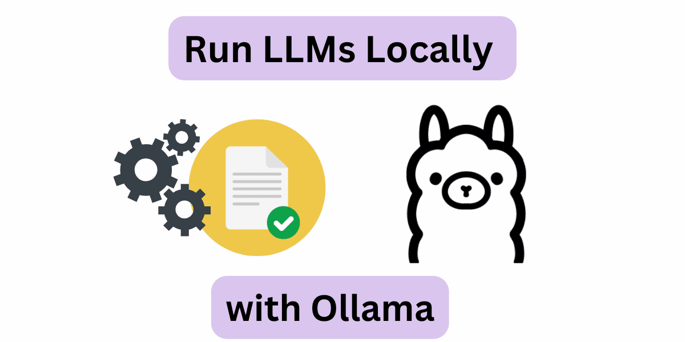
Ollama 是一个开源的本地大语言模型运行框架，专为在本地机器上便捷部署和运行大型语言模型（LLM）而设计。
Ollama 支持多种操作系统，包括 macOS、Windows、Linux 以及通过 Docker 容器运行。
简单来说，如果 ChatGPT、Claude、DeepSeeek 这类服务是通过互联网调用别人家的模型，那么 Ollama 更像是一个本地 AI 模型运行环境。
Ollama 适用于开发者、研究人员以及对数据隐私有较高要求的用户，它可以帮助用户在本地环境中快速部署和运行大型语言模型，同时提供灵活的定制化选项。
使用 Ollama，我们可以在在本地运行 qwen3.5、Llama 3.3、DeepSeek-R1、Phi-4、Mistral、Gemma 2 和其他模型。
| 人员类型 | 可能想做的事 |
|---|---|
| AI 初学者 | 搞懂什么是本地大模型，装好 Ollama，下载、运行、删除模型 |
| 程序员 / 开发者 | 把大模型集成到自己的 Python、JavaScript、Web 应用中 |
| AI Agent 开发者 | 把本地模型接入 Claude Code、Codex、OpenCode 等编程 Agent |
| 想体验本地 AI 的普通用户 | 不买 API、数据不上云，在自己电脑上体验各种开源模型 |
对开发者来说，Ollama 的价值在于把大模型变成一个可以随时调用的本地服务。
典型用途包括：AI 聊天机器人、AI 写作工具、AI 编程助手、文档分析工具、RAG 知识库、向量检索、AI Agent、自动化工作流，以及本地 AI Web 应用。
这些能力的背后，是 Ollama 提供的文本生成、聊天、模型管理、Embedding 等接口，并且支持流式响应和工具调用。
如果你正在学习 Claude Code、Codex、OpenCode 等 AI 编程工具，Ollama 可以作为它们的本地模型后端。
Ollama 已经提供与 Claude Code、Codex、OpenCode、Copilot CLI、Droid 等工具的官方集成方式，一条 ollama launch 命令就能把本地模型接入这些 Agent 工作流，这部分会在集成章节详细展开。
Ollama 本身并不难，如果只是运行模型，基本不需要编程基础。
不同的学习目标对应的基础要求不同，可以对照下表评估自己的起点：
| 学习目标 | 所需基础 |
|---|---|
| 安装 Ollama | 基本电脑操作、终端基础 |
| 下载和运行模型 | 基本命令行知识 |
| 使用 Ollama API | HTTP、JSON 基础 |
| Python 开发 | Python 3.x 基础教程 |
| JavaScript 开发 | JavaScript / TypeScript 基础 |
| RAG / Agent 开发 | Python + 大模型基础 |
| 模型部署与优化 | GPU、显存、Linux、Docker 等基础 |
如果只是想体验 Ollama，知道什么是终端、命令、文件夹和模型基本就够了。
如果想进一步开发 AI 应用，建议先了解 HTTP / REST API、JSON、Python 或 JavaScript，以及 Git 和 Docker 的基本用法。
这是 Ollama 最核心的能力：在自己电脑或服务器上运行开源模型，不需要自己搭建复杂的推理环境。
一条命令即可启动，模型运行后直接对话：
ollama run qwen3.5
这条命令会本地启动通义千问 Qwen3.5 模型，进入交互式对话终端，如果本地没有该模型时会自动先下载，再启动。
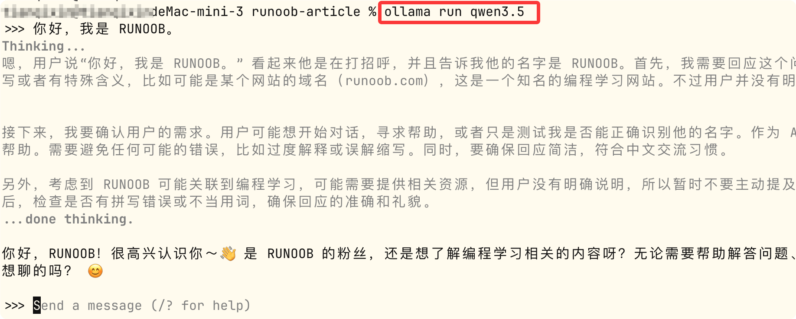
Ollama 官方地址：https://ollama.com/
Github 开源地址：https://github.com/ollama/ollama
Ollama 官方文档：https://github.com/ollama/ollama/tree/main/docs
Ollama 是一个开源的大型语言模型（LLM）平台，让用户能够轻松地在本地运行、管理和与大型语言模型进行交互。
Ollama 提供了一个简单的方式来加载和使用各种预训练的语言模型，支持文本生成、翻译、代码编写、问答等多种自然语言处理任务。
Ollama 的特点在于它不仅仅提供了现成的模型和工具集，还提供了方便的界面和 API，使得从文本生成、对话系统到语义分析等任务都能快速实现。
与其他 NLP 框架不同，Ollama 旨在简化用户的工作流程，使得机器学习不再是只有深度技术背景的开发者才能触及的领域。
Ollama 支持多种硬件加速选项，包括纯 CPU 推理和各类底层计算架构（如 Apple Silicon），能够更好地利用不同类型的硬件资源。
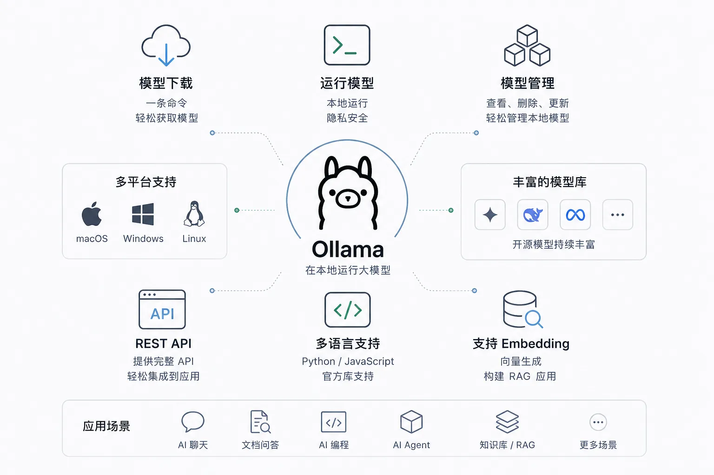
Ollama 是一个由四部分组成的本地模型运行环境。
| 组成部分 | 说明 | 在哪里 |
|---|---|---|
| 命令行工具 | run、pull、list 等所有日常操作的入口 | 系统 PATH 中的 ollama 命令 |
| 后台服务 | 常驻运行，负责模型加载与推理，对外提供 REST API | 本机 11434 端口 |
| 模型库 | 各家开源模型的官方分发渠道，按能力标签分类 | ollama.com/library |
| 本地存储 | 下载的模型权重与配置 | 用户目录下的 .ollama 文件夹 |
新版还提供了两个更友好的入口：直接输入 ollama 打开交互式菜单，以及用 ollama launch 一键把本地模型接入 Claude Code、VS Code 等工具。
多种预训练语言模型支持
Ollama 提供了多种开箱即用的预训练模型，包括常见的 GPT、BERT 等大型语言模型。用户可以轻松加载并使用这些模型进行文本生成、情感分析、问答等任务。
易于集成和使用
Ollama 提供了命令行工具（CLI）和 Python SDK，简化了与其他项目和服务的集成。开发者无需担心复杂的依赖或配置，可以快速将 Ollama 集成到现有的应用中。
本地部署与离线使用
不同于一些基于云的 NLP 服务，Ollama 允许开发者在本地计算环境中运行模型。这意味着可以脱离对外部服务器的依赖，保证数据隐私，并且对于高并发的请求，离线部署能提供更低的延迟和更高的可控性。
支持模型微调与自定义
用户不仅可以使用 Ollama 提供的预训练模型，还可以在此基础上进行模型微调。根据自己的特定需求，开发者可以使用自己收集的数据对模型进行再训练，从而优化模型的性能和准确度。
性能优化
Ollama 关注性能，提供了高效的推理机制，支持批量处理，能够有效管理内存和计算资源。这让它在处理大规模数据时依然保持高效。
跨平台支持
Ollama 支持在多个操作系统上运行，包括 Windows、macOS 和 Linux。这样无论是开发者在本地环境调试，还是企业在生产环境部署，都能得到一致的体验。
开放源码与社区支持
Ollama 是一个开源项目，这意味着开发者可以查看源代码，进行修改和优化，也可以参与到项目的贡献中。此外，Ollama 有一个活跃的社区，开发者可以从中获取帮助并与其他人交流经验。
内容创作：
帮助作家、记者、营销人员快速生成高质量的内容，例如博客文章、广告文案等。
编程辅助：：
帮助开发者生成代码、调试程序或优化代码结构。
教育和研究：
辅助学生和研究人员进行学习、写作和研究，例如生成论文摘要或解答问题。
跨语言交流：
提供高质量的翻译功能，帮助用户打破语言障碍。
个人助手：
作为一个智能助手，帮助用户完成日常任务，例如撰写邮件、生成待办事项等。
本地运行不是怀旧，而是四个实打实的理由。
隐私：数据不出设备。合同草案、病历资料、私有代码这些不能离开本机的内容，用云端 API 前总要掂量一遍，本地推理则天然没有这个问题。
成本：没有按 Token 计费。下载模型只花一次磁盘空间和电费，重度使用时边际成本趋近于零，这对需要批量处理文本的场景尤其友好。
离线：不依赖网络。内网环境、机房、飞机上，只要设备在，模型就在；这对现场部署和弱网地区是刚需。
可控：版本和行为可预期。本地模型不会悄悄升级换脑，今天验证过的输出格式，明天不会变；这对生产系统比"更强"更重要。
当然也要诚实地说：本地开源模型的能力上限目前仍低于云端旗舰模型， 选本地方案是"够用、可控、便宜"，不是"无所不能"。
把两种方式放在一起对比，选择标准就浮出水面了。
| 维度 | Ollama 本地 | 云端 API（OpenAI、Claude 等） |
|---|---|---|
| 数据位置 | 不出本机 | 上传服务商服务器 |
| 算力来源 | 自己的 CPU / GPU | 服务商数据中心 |
| 费用模型 | 一次下载，免费使用 | 按 Token 持续计费 |
| 模型强度 | 受本机硬件约束 | 可用最强旗舰模型 |
| 离线可用 | 完全可用 | 不可用 |
| 上手成本 | 装一次软件，配一次硬件 | 注册即用，但要管好密钥与账单 |
适用场景也随之清晰：隐私敏感、高频调用、离线环境、学习与开发验证，选本地；需要顶级模型能力、突发弹性流量、自己没有 GPU，选云端 API。
两者不是敌人，成熟产品经常是混合架构：日常请求走本地，少数高难度任务转发云端。
本地跑大模型不止 Ollama 一条路，常见方案各有人群。
| 方案 | 定位 | 上手难度 | 适合人群 |
|---|---|---|---|
| Ollama | 一条命令跑模型的运行时 + 本地 API 服务 | 低 | 大多数开发者、想快速集成的团队 |
| llama.cpp | 高性能推理引擎本身，参数多、控制粒度细 | 高 | 想深挖推理细节、定制部署的用户 |
| LM Studio | 图形界面桌面应用，内置模型浏览与下载 | 低 | 偏好图形界面、不想碰命令行的用户 |
| vLLM | 面向 GPU 服务器的高吞吐生产级推理服务 | 高 | 高并发线上服务、算力充裕的团队 |
| GPT4All | 轻量桌面应用，主打本地文档对话 | 低 | 非技术背景的普通用户 |
它们的关系值得说一句：Ollama 底层的推理能力正来自 llama.cpp，可以理解为 llama.cpp 之上的"易用封装 + 服务化 + 模型库生态"。
本教程选择 Ollama 作为主线，取的是它的均衡：命令极简、三平台全覆盖、API 与工具生态最完整。对比基于公开资料与 2026 年 8 月的项目状态，各方案都在快速演进。
前面对比的都是"别家云端"，Ollama 自己也提供了云端方案，三种使用大模型的方式就此凑齐。
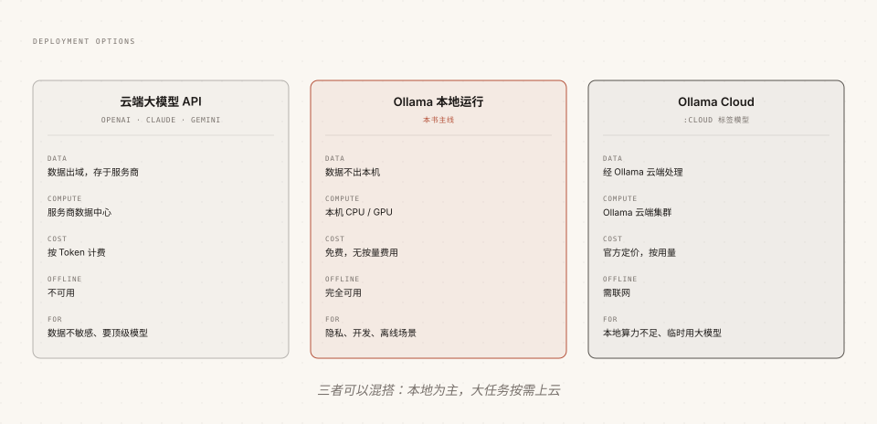
Ollama Cloud 的使用体验和本地几乎一样：给模型名加上 :cloud 后缀，登录账号后直接运行，本地的命令、API、工具集成原样生效，只是推理被透明地转发到了 Ollama 的服务器。
它的价值在两个场景：本机算力跑不动的超大模型，以及买新电脑前"先试试更大的模型值不值"。
云模型有退役机制：官方会定期下线旧云模型并公告替代品，依赖它们的自动化流程需要留意通知；本地模型则永远躺在你的磁盘上，不受任何影响。这一主题在 Cloud 混合部署章节完整展开。
最后一件事：评估自己的机器。Ollama 对硬件的要求出奇地宽容，纯 CPU 也能跑，只是速度有数量级差距。
有独立显卡（NVIDIA、AMD）或 Apple Silicon 芯片时，推理走 GPU 加速，生成速度通常是纯 CPU 的数倍到数十倍。
上下文窗口的默认值由 Ollama 按显存自动分级：
| 显存大小 | 默认上下文长度 |
|---|---|
| 小于 24GiB | 4K |
| 24 ~ 48GiB | 32K |
| 48GiB 及以上 | 256K |
再看参数规模与设备的匹配预期（以 qwen3.5 家族为例 https://ollama.com/library/qwen3.5）：
| 模型规格 | 下载体积 | 建议配置 | 体验预期 |
|---|---|---|---|
| qwen3.5:latest | 约 6.6GB | 16GB 内存或 8GB 显存 | 默认规格，质量速度均衡 |
| qwen3.5:0.8b | 约 1.0GB | 8GB 内存即可 | 验证环境、轻量对话 |
| qwen3.5:4b | 约 3.4GB | 16GB 内存 | 日常使用的甜点位 |
| qwen3.5:9b 等同于 qwen3.5:latest | 约 6.6GB | 16GB 内存或 8GB 显存 | 默认规格，质量速度均衡 |
| qwen3.5:27b | 约 17GB | 24GB 显存 | 长文、代码等高要求任务 |
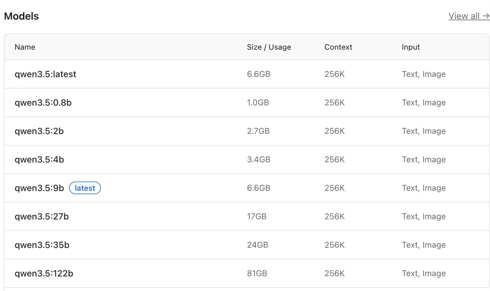
模型跑起来之后，用 ollama ps 命令查看 PROCESSOR 列，就能确认模型是否真的整卡跑在 GPU 上，这个验证动作在模型管理章节会反复用到。
配置实在有限也不用气馁：0.8b 规格足以跑通本教程的绝大多数命令演示；真遇到大模型需求，还有 :cloud 这条不需要硬件的路。
Ollama 支持多种操作系统，包括 macOS、Windows、Linux 以及通过 Docker 容器运行。
Ollama 对系统要求不高，纯 CPU 也能运行模型，但有没有独立显卡直接决定生成速度。
| 平台 | 系统要求 | GPU 支持 |
|---|---|---|
| macOS | macOS Sonoma（v14）或更新版本 | Apple M 系列芯片通过 Metal 加速；Intel 芯片仅 CPU |
| Windows | Windows 10 22H2 或更新版本（家庭版 / 专业版） | NVIDIA 驱动 551.61+；AMD 需 ROCm v7 或 Vulkan 驱动 |
| Linux | 主流发行版（Ubuntu、Debian、CentOS 等） | NVIDIA / AMD ROCm v7 / Vulkan，也支持纯 CPU |
| Docker | 可用的 Docker 环境 | Linux 与 Windows（WSL2）可 GPU 直通；macOS 不支持 |
模型文件体积从几 GB 到几百 GB 不等，安装前请预留足够的磁盘空间。模型默认存放在用户主目录，空间不足时可以通过环境变量 OLLAMA_MODELS 迁移到其他磁盘。
Linux/macOS 一键安装命令：
curl -fsSL https://ollama.com/install.sh | sh
Windows 一键安装命令：
irm https://ollama.com/install.ps1 | iex
也可以直接下载安装包， 官方下载地址：https://ollama.com/download。
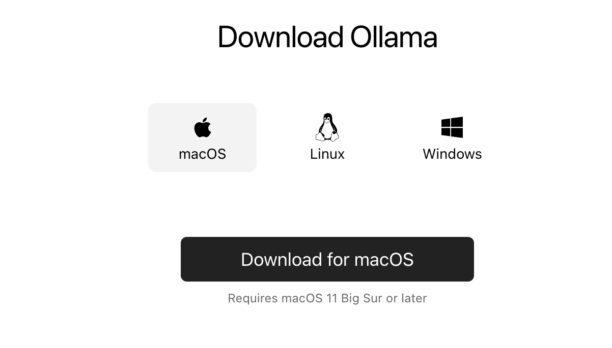
我们可以根据不同的系统下载对应的包，服务器环境推荐 Linux 脚本或 Docker。
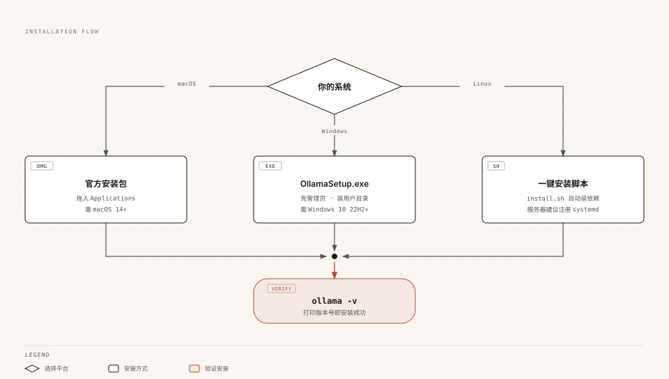
Ollama 界面如下：
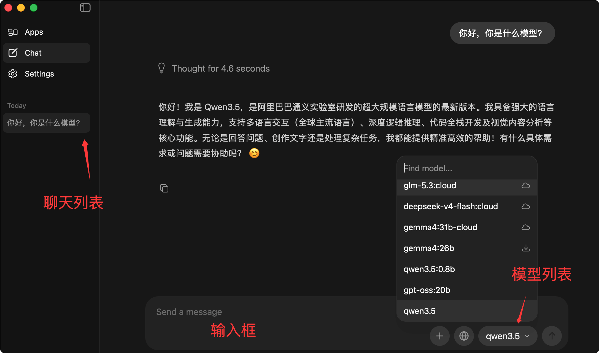
打开浏览器，访问 Ollama 官方网站：https://ollama.com/download，下载适用于 Windows 的安装程序。
下载地址为：https://ollama.com/download/OllamaSetup.exe。
下载完成后，双击安装程序并按照提示完成安装。
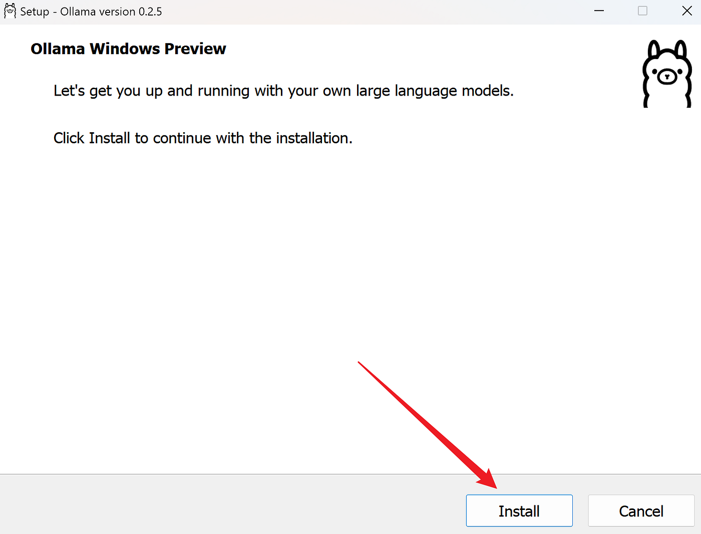
安装完成后，cmd、PowerShell 或 Windows Terminal 中都可以直接使用 ollama 命令。
也可以使用命令行安装：
irm https://ollama.com/install.ps1 | iex
打开命令提示符或 PowerShell，输入以下命令验证安装是否成功：
ollama --version
如果显示版本号，则说明安装成功。
如果需要将 Ollama 安装到非默认路径，可以在安装时通过命令行指定路径，例如：
OllamaSetup.exe /DIR="d:\some\location"
这样可以将 Ollama 安装到指定的目录。
打开浏览器，访问 Ollama 官方网站：https://ollama.com/download，下载适用于 macOS 的安装程序。
下载地址为：https://ollama.com/download/Ollama.dmg。
也可以用命令行一键安装：
curl -fsSL https://ollama.com/install.sh | sh下载完成后，双击安装包并按照提示完成安装。
安装完成后，通过以下命令验证：
ollama --version
如果显示版本号，则说明安装成功。
Linux 下可以使用一键安装脚本，我们打开终端，运行以下命令：
curl -fsSL https://ollama.com/install.sh | bash
安装完成后，通过以下命令验证：
ollama --version
如果显示版本号，则说明安装成功。
Docker 适合服务器和需要环境隔离的场景，官方提供现成镜像，CPU 环境一条命令就能跑起来。
# 启动 Ollama 容器：数据卷持久化模型，映射 11434 端口 docker run -d -v ollama:/root/.ollama -p 11434:11434 --name ollama ollama/ollama
让容器用上 NVIDIA 显卡需要先安装 NVIDIA Container Toolkit，以 Ubuntu/Debian 为例：
# 1. 配置软件仓库
curl -fsSL https://nvidia.github.io/libnvidia-container/gpgkey \
| sudo gpg --dearmor -o /usr/share/keyrings/nvidia-container-toolkit-keyring.gpg
curl -fsSL https://nvidia.github.io/libnvidia-container/stable/deb/nvidia-container-toolkit.list \
| sed 's#deb https://#deb [signed-by=/usr/share/keyrings/nvidia-container-toolkit-keyring.gpg] https://#g' \
| sudo tee /etc/apt/sources.list.d/nvidia-container-toolkit.list
sudo apt-get update
# 2. 安装工具包
sudo apt-get install -y nvidia-container-toolkit
# 3. 配置 Docker 运行时并重启
sudo nvidia-ctk runtime configure --runtime=docker
sudo systemctl restart docker
然后加上 --gpus=all 参数启动容器：
# 带 GPU 的启动命令 docker run -d --gpus=all -v ollama:/root/.ollama -p 11434:11434 --name ollama ollama/ollama
AMD 显卡使用 rocm 标签的镜像，并挂载设备：
# AMD ROCm 版本，挂载 GPU 设备 docker run -d --device /dev/kfd --device /dev/dri -v ollama:/root/.ollama -p 11434:11434 --name ollama ollama/ollama:rocm
容器启动后，通过 exec 在容器内部执行 ollama 命令：
# 在容器内拉取并运行 qwen3.5 docker exec -it ollama ollama run qwen3.5
例如：
$ docker exec -it ollama ollama run qwen3.5 >>> 用一句话介绍 RUNOOB 菜鸟教程 RUNOOB（菜鸟教程）是一个面向编程初学者的中文教程网站。 >>> /bye
macOS 版 Docker Desktop 不支持 GPU 直通，容器内只能 CPU 推理。Apple Silicon 用户想用 GPU 加速，请直接使用原生安装包。
无论哪种方式安装，最后都用统一的三步验证：查版本、跑对话、连 API。
# 输出版本号说明命令行可用 ollama -v
直接输入 ollama 不带参数，会进入交互式菜单，可以在这里选择模型启动对话：
$ ollama Welcome to Ollama Run a model Start an interactive chat Launch tools Claude Code, VS Code, and more
Ollama 安装后会在本地 11434 端口提供 API，用 curl 请求版本接口确认服务在监听：
# 本地 API 默认地址，返回 JSON 版本信息 curl http://localhost:11434/api/version
{"version":"0.17.0"}
macOS 和 Windows 安装后 Ollama 常驻后台（菜单栏 / 托盘图标），API 自动可用；Linux 使用 systemd 服务时同样是开机即用，只有手动 ollama serve 方式需要保持终端开启。
升级很简单，卸载则各平台方式不同，尤其要注意别误删已下载的模型。
| 平台 | 升级方式 |
|---|---|
| macOS / Windows | 自动下载更新，点击菜单栏或托盘图标的"Restart to update"即可应用 |
| Linux（脚本安装） | 重新执行一遍安装脚本 |
| Linux（手动安装） | 先删除旧库，再重新下载解压新包 |
| Docker | 拉取最新镜像后重建容器，数据卷保留模型 |
macOS 需要手动清理应用和残留文件，逐条执行：
在设置的"应用 - 安装的应用"里找到 Ollama 点击卸载即可。
如果你曾通过 OLLAMA_MODELS 把模型迁移到其他目录，卸载程序不会删除这些模型文件，需要手动清理。
安装阶段的问题大多与网络、磁盘和终端环境有关，下表汇总了最高频的几种。
| 现象 | 原因 | 解决办法 |
|---|---|---|
| 终端提示 ollama 命令不存在 | CLI 未进入 PATH | macOS 重启一次 Ollama 应用，同意创建 /usr/local/bin 链接；Windows 重开一个终端窗口 |
| 模型下载缓慢或失败 | 网络到源站不稳定 | 配置 HTTPS_PROXY 代理；中断的下载会自动断点续传，重跑 pull 即可 |
| WSL2 中下载特别慢 | Win10 WSL 网卡特性问题 | 关闭 vEthernet (WSL) 适配器的 Large Send Offload V2（IPv4/IPv6） |
| Windows 终端出现乱码方块 | 旧终端字体不支持进度字符 | 更换终端字体或改用 Windows Terminal |
| 提示磁盘空间不足 | 用户目录所在盘空间小 | 用 OLLAMA_MODELS 把模型迁到大容量磁盘（环境变量章节详解） |
配置代理时只设置 HTTPS_PROXY 即可，不要设置 HTTP_PROXY：Ollama 拉取模型只走 HTTPS，多设 HTTP 代理反而可能中断客户端与服务端的连接。
Ollama 运行模型使用 ollama run 命令。
例如我们要运行 qwen3.5:0.8b 并与该模型对话可以使用以下命令：
首次运行自动下载，约 1.0GB：
ollama run qwen3.5:0.8b
命令执行后会先看到下载进度，下载完成后直接进入对话：
$ ollama run qwen3.5:0.8b pulling manifest pulling 87497c5f0e8f... 100% |████████████████████| 1.0GB pulling 5e2ad5... 100% |████████████████████| 11KB verifying sha256 digest writing manifest success >>> 你好，你是什么模型？ >>> /bye
看到 >>> 提示符就说明模型已经加载完成，输入问题回车即可对话。
下载中途断网不必重来，Ollama 支持断点续传，重新执行同样的命令会从上次进度继续。
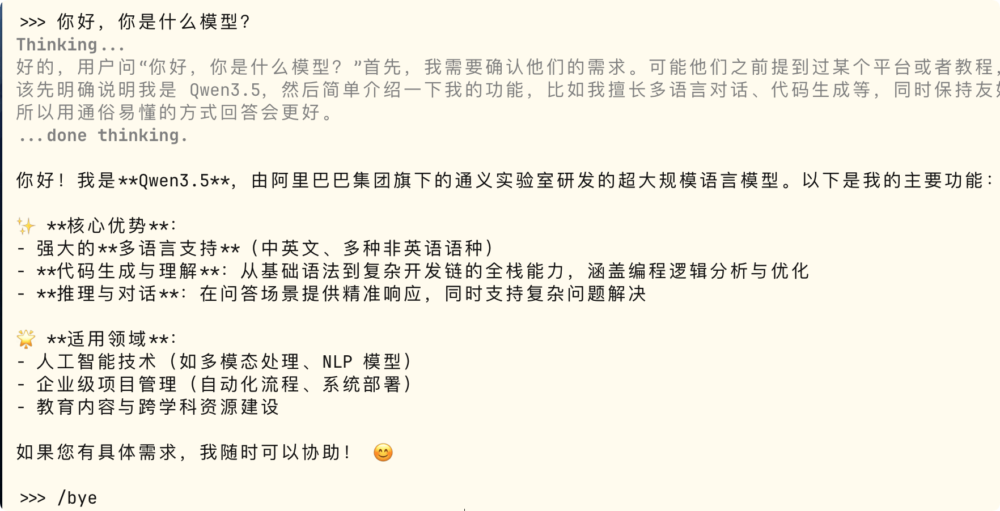
除了直接敲命令，直接输入 ollama 不带参数会打开交互式菜单，新版把它作为统一入口。
$ ollama
Chat, Code, & Work
Chat with models, code, search the web, and delegate real work
Launch Claude Code
Anthropic's coding tool with subagents
Launch OpenCode
Anomaly's open-source coding agent
Launch Hermes Agent
Self-improving AI agent built by Nous Research
Launch OpenClaw
Personal AI with 100+ skills
More...
Show additional integrations
选择 Chat, Code, & Work 即可挑选一个已下载的模型开始聊天，效果和 ollama run 完全一致。
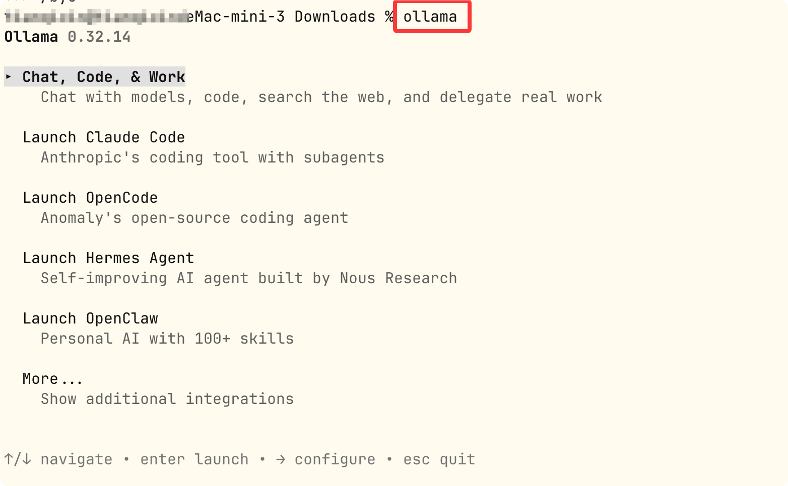
这里可以选择模型：
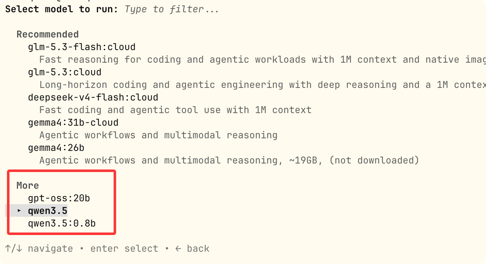
菜单里的 Launch 用于启动 VS Code、Claude Code 等集成工具，属于进阶玩法，教程后面会专门介绍。
模型不是越大越好，跑不动的模型只会让你的电脑风扇狂转、回复以秒甚至分钟计。
新手选择的原则很简单：先跑小的，流畅之后再逐步加大。对照自己机器的内存和显存选：
| 你的机器配置 | 推荐标签 | 下载体积 | 体验预期 |
|---|---|---|---|
| 8GB 内存，无独立显卡 | qwen3.5:0.8b / 2b | 1.0 ~ 2.7GB | 轻量对话流畅 |
| 16GB 内存，无独立显卡 | qwen3.5:4b / 9b | 3.4 ~ 6.6GB | 默认规格，质量与速度均衡 |
| 8GB 以上显存的显卡 | qwen3.5:9b 或 qwen3.5:latest | 约 6.6GB | GPU 加速，速度明显提升 |
| 16GB 以上显存的显卡 | qwen3.5:27b | 约 17GB | 更高质量的长文与代码 |
| 配置实在不足 | qwen3.5:cloud | 无需下载 | 云端推理，需登录 Ollama 账号 |
同一模型的不同规格，能力差距是真实存在的。0.8b 适合验证环境，日常使用建议至少 4b 起步。
你在命令里写的名字由"模型名 + 标签"两部分组成，这决定了你下载的到底是什么。
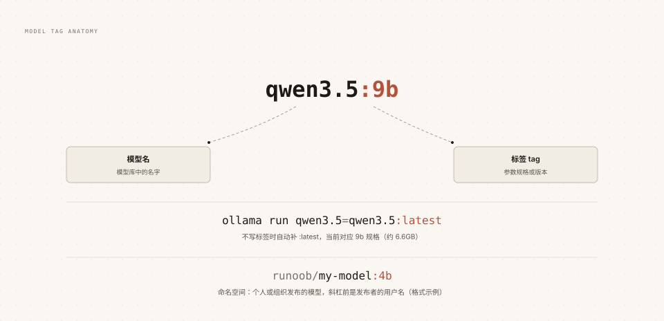
模型名对应官方模型库里的一家人，比如 qwen3.5、gemma4、deepseek-r1。
同一家族下会有多个规格，它们共用一个模型名。
标签决定具体下载哪个文件，常见的是参数规格，如 0.8b、9b、27b。
不写标签时，Ollama 自动补上 latest，也就是官方为该模型设置的默认规格。
对 qwen3.5 来说，ollama run qwen3.5 等价于 ollama run qwen3.5:latest，当前指向 9b 规格。
带斜杠的名字表示第三方发布的模型，斜杠前是发布者的用户名。
官方模型库里的模型没有命名空间，个人或团队发布的模型（例如 runoob/my-model:4b 这种格式）才会带，模型的分享与分发在私有化部署章节演示。
不确定本地有哪些模型、各占多少空间时，用 list 命令查看：
$ ollama list NAME ID SIZE MODIFIED qwen3.5:0.8b 9e3f4b3a1c2d 1.0GB 5 minutes ago qwen3.5:latest a8b2c9d3e4f5 6.6GB 2 hours ago
下一章会把 list、show、rm 等模型管理命令讲全。
对话状态下输入 /bye 即可退出，回到普通终端。
再次运行同一条 ollama run 命令就能重新进入对话，模型已经下载过，这次几乎是秒进。
想换一个模型聊天，直接 run 另一个模型即可，两个模型可以来回切换：
切换后，之前那个模型会在内存里保留约 5 分钟，没有新请求就自动卸载，这个机制叫 keep-alive，下一章会讲怎么调整它。
对话中要输入多行文字时，用三个双引号包裹：
如果你希望将 Ollama 与 Python 代码集成，可以使用 Ollama 的 Python SDK 来加载和运行模型。
首先，需要安装 Ollama 的 Python SDK，打开终端，执行以下命令：
pip install ollama
接下来，你可以使用 Python 代码来加载和与模型交互。
以下是一个简单的 Python 脚本示例，演示如何使用 qwen3.5 模型来生成文本：
在终端中运行你的 Python 脚本：
python test.py
你会看到模型根据你的输入返回的回答。
此代码会与模型进行对话，并打印模型的回复。
此代码会以流式方式接收模型的响应，适用于处理大数据。
Ollama 提供了多种命令行工具（CLI）供用户与本地运行的模型进行交互。
基本格式：
ollama <command> [args]
我们可以用 ollama --help 查看包含有哪些命令：
Large language model runner Usage: ollama [flags] ollama [command] Available Commands: serve Start ollama create Create a model from a Modelfile show Show information for a model run Run a model stop Stop a running model pull Pull a model from a registry push Push a model to a registry list List models ps List running models cp Copy a model rm Remove a model help Help about any command Flags: -h, --help help for ollama -v, --version Show version information
1、使用方法
ollama [flags]：使用标志（flags）运行 ollama。
ollama [command]：运行 ollama 的某个具体命令。
2、可用命令
3、标志（Flags）
完整示例：
| 命令 (Command) | 说明 (Description) | 示例 (Example) |
|---|---|---|
ollama run |
运行模型。如果不存在则自动拉取。 | ollama run llama3 |
ollama pull |
拉取模型。从库中下载模型但不运行。 | ollama pull mistral |
ollama list |
列出模型。显示本地所有已下载的模型。 | ollama list |
ollama rm |
删除模型。移除本地模型释放空间。 | ollama rm llama3 |
ollama cp |
复制模型。将现有模型复制为新名称（用于测试）。 | ollama cp llama3 my-model |
ollama create |
创建模型。根据 Modelfile 创建自定义模型（高级）。 | ollama create my-bot -f ./Modelfile |
ollama show |
显示信息。查看模型的元数据、参数或 Modelfile。 | ollama show --modelfile llama3 |
ollama ps |
查看进程。显示当前正在运行的模型及显存占用。 | ollama ps |
ollama push |
推送模型。将你自定义的模型上传到 ollama.com。 | ollama push my-username/my-model |
ollama serve |
启动服务。启动 Ollama 的 API 服务（通常后台自动运行）。 | ollama serve |
ollama help |
帮助。查看任何命令的帮助信息。 | ollama help run |
pull
拉取远端模型到本地。
ollama pull <model>
rm / remove
删除本地模型。
ollama rm <model>
list / ls
列出所有本地模型。
ollama list
run
交互模式运行模型，不退出。
ollama run <model>
可带系统信息与 prompt：
ollama run <model> -s "<system>" -p "<prompt>"
run + script
从文件读取 prompt：
ollama run <model> < input.txt
当你输入 ollama run 进入聊天界面后，你不再是在操作命令行，而是在和 AI 对话。这时你可以使用以 / 开头的快捷指令来控制对话：
/bye 或 /exit：最重要！ 退出聊天界面，返回命令行。/clear：清空当前的上下文记忆（开启一段新的对话）。/show info：查看当前模型的详细参数信息。/set parameter seed 123：设置随机种子（高级玩法，用于复现结果）。/help：在聊天中查看所有可用的快捷键。generate
执行单次推理，输出文本。
ollama generate <model> -p "<prompt>"
create
用 Modelfile 创建本地模型。
ollama create <model-name> -f Modelfile
cp
复制一个模型为新名字。
ollama cp <src> <dst>
serve
启动 Ollama 本地服务（默认 11434）。
ollama serve
run serverless
当 ollama run 时会自动拉起后台服务，不需单独执行。
show
查看模型元数据、参数、模板。
ollama show <model>
这些参数多数可用于 run/generate：
--num-predict <number> 限制输出 token 数 --temperature <float> 控制随机性 --top-k <int> 采样范围 --top-p <float> 核采样 --seed <int> 固定随机性 --format json 输出 JSON --keepalive <seconds> 会话保持时间
构建模型时使用：
REST 端点 http://localhost:11434/api：
/api/generate：文本生成/api/chat：对话流式接口/api/pull：远程拉取/api/tags：本地模型列表调用示例（curl）：
curl http://localhost:11434/api/generate \
-d '{"model":"qwen2.5","prompt":"hello"}'
自定义参数运行：
ollama run <model> --temperature 0.2 --top-p 0.9
持久会话（保留上下文）：
会话由模型内部缓存自动管理，无需额外命令。
Ollama 是一个本地化的、支持多种自然语言处理（NLP）任务的机器学习框架，专注于模型加载、推理和生成任务。
通过 Ollama，用户能够方便地与本地部署的大型预训练模型进行交互。
在 Ollama 中，模型是核心组成部分。它们是经过预训练的机器学习模型，能够执行不同的任务，例如文本生成、文本摘要、情感分析、对话生成等。
Ollama 支持多种流行的预训练模型，常见的模型有：
模型的主要功能：
模型通常是由大量参数构成的神经网络，通过对大量文本数据进行训练，能够学习语言规律并进行高效的推理。
Ollama 支持的模型可以访问：https://ollama.com/library
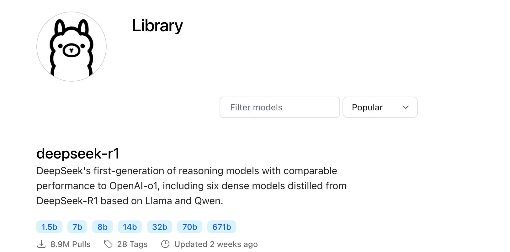
点击模型，可以查看到下载的命令：
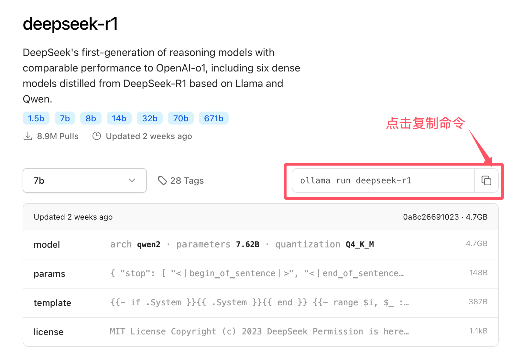
下表列出一些模型的下载命令：
| 模型 | 参数 | 大小 | 下载命令 |
|---|---|---|---|
| Llama 3.3 | 70B | 43GB | ollama run llama3.3 |
| Llama 3.2 | 3B | 2.0GB | ollama run llama3.2 |
| Llama 3.2 | 1B | 1.3GB | ollama run llama3.2:1b |
| Llama 3.2 Vision | 11B | 7.9GB | ollama run llama3.2-vision |
| Llama 3.2 Vision | 90B | 55GB | ollama run llama3.2-vision:90b |
| Llama 3.1 | 8B | 4.7GB | ollama run llama3.1 |
| Llama 3.1 | 405B | 231GB | ollama run llama3.1:405b |
| Phi 4 | 14B | 9.1GB | ollama run phi4 |
| Phi 3 Mini | 3.8B | 2.3GB | ollama run phi3 |
| Gemma 2 | 2B | 1.6GB | ollama run gemma2:2b |
| Gemma 2 | 9B | 5.5GB | ollama run gemma2 |
| Gemma 2 | 27B | 16GB | ollama run gemma2:27b |
| Mistral | 7B | 4.1GB | ollama run mistral |
| Moondream 2 | 1.4B | 829MB | ollama run moondream |
| Neural Chat | 7B | 4.1GB | ollama run neural-chat |
| Starling | 7B | 4.1GB | ollama run starling-lm |
| Code Llama | 7B | 3.8GB | ollama run codellama |
| Llama 2 Uncensored | 7B | 3.8GB | ollama run llama2-uncensored |
| LLaVA | 7B | 4.5GB | ollama run llava |
| Solar | 10.7B | 6.1GB | ollama run solar |
Ollama 支持多种 NLP 任务。每个任务对应模型的不同应用场景，主要包括但不限于以下几种：
通过命令行工具，用户可以指定不同的任务，并加载不同的模型来完成特定任务。
推理是指在已训练的模型上进行输入处理，生成输出的过程。
Ollama 提供了易于使用的命令行工具或 API，使用户可以快速向模型提供输入并获取结果。
推理是 Ollama 的主要功能之一，也是与模型交互的核心。
推理过程：
Ollama 通过 API 或 CLI 与本地模型交互，能够让用户轻松实现推理任务。
微调是指在一个已预训练的模型上，基于特定的领域数据进行进一步的训练，以便使模型在特定任务或领域上表现得更好。
Ollama 支持微调功能，用户可以使用自己的数据集对预训练模型进行微调，来定制模型的输出。
微调过程：
微调有助于模型在处理特定领域问题时表现得更加精确和高效。
Ollama 提供了多种方式与模型进行交互，其中最常见的就是通过命令行进行推理操作。
通过命令行直接与模型进行交互是最简单的方式。
使用 ollama run 命令启动模型并进入交互模式：
ollama run <model-name>
例如我们下载 qwen3.5 模型：
启动后，您可以直接输入问题或指令，模型会实时生成响应。
>>> 你好，你能帮我写一段代码吗？
当然可以。但是首先我想知道您希望在哪种编程语言中实现这个功能（例如Python、JavaScript等）和要解决什么问题或者完成的任务是什么样的例子呢？这样我们可以为您提供更准确的
内容，同时也方便我帮助你写出最适合您的代码片段。
>>> 写一段 python hello world
当然可以！这是一个简单的 "Hello, World!" 程序：
```python
print("Hello, World!")
```
这个脚本会输出 `Hello, World!`，并将其打印到控制台上。这只是最基本的 Python Hello world示例；Python是一种解释型、通用型的编程语言以其简洁性和易读性而闻名。它还允许
用户在代码中插入变量和表达式来创建复杂的行为。
在交互模式下，输入 /bye 或按下 Ctrl+d 退出。
如果您只需要模型生成一次响应，可以直接在命令行中传递输入。
通过管道将输入传递给模型：
输出结果如下：
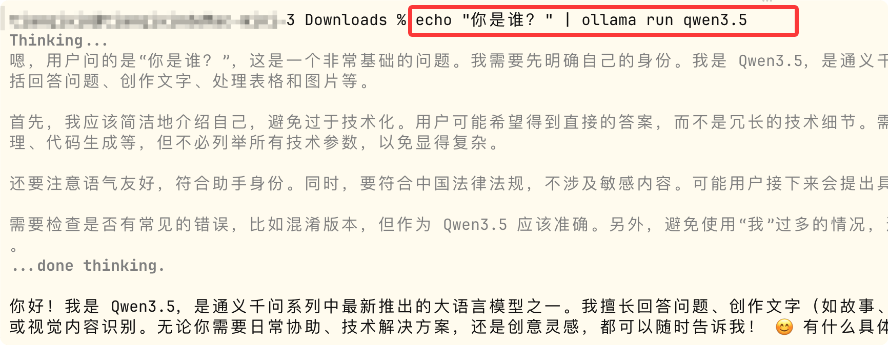
直接在命令行中传递输入：
ollama run qwen3.5 "Python 的 hello world 代码？"
输出结果如下：
在 Python 中，"Hello World!" 通常是这段简单的脚本：
```python
print("Hello World!")
```
当你运行这个程序时，它会输出 `Hello, World`。这是因为 print() 函数将字符串 "Hello, World" 打印到标准输出设备 (stdout) - 也就是你的屏幕上显示的信息（在这种情况下是命
令行终端或类似的工具中运行 Python 脚本时，它会直接写入控制台。
Ollama 支持多轮对话，模型可以记住上下文。
可以将文件内容作为输入传递给模型。
假设 input.txt 文件内容为：
Python 的 hello world 代码？
将 input.txt 文件内容作为输入：
ollama run qwen3.5 < input.txt
通过 Modelfile 定义自定义提示词或系统指令，使模型在交互中遵循特定规则。
编写一个 Modelfile：
ollama create runoob-coder -f ./Modelfile
运行自定义模型:
ollama run runoob-coder
Ollama 会记录交互日志，方便调试和分析。
查看日志:
ollama logs
Ollama 安装后在本地 11434 端口提供一整套 REST API，覆盖文本生成、对话、向量嵌入和模型管理，并提供 OpenAI、Anthropic 两套兼容协议。
本篇逐个讲透核心接口：请求结构、流式处理、用量统计、错误处理，让任何语言都能接入本地模型。
Ollama 的 API 有本地和云端两个入口，认证规则不同。
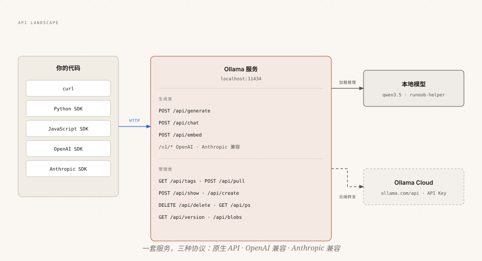
| 入口 | Base URL | 认证 |
|---|---|---|
| 本地服务 | http://localhost:11434/api | 无需认证 |
| 本地服务（兼容协议） | http://localhost:11434/v1 | 无需认证，api_key 任意填写 |
| Ollama Cloud | https://ollama.com/api | Authorization: Bearer + API Key |
本地服务默认免认证，开箱即用；直连 ollama.com 的云端接口时，先在官网设置页创建 API Key 并放入请求头。
generate 是最基础的单轮生成接口，传入模型名和提示词即可：
stream 设为 false 时返回单个 JSON 对象：
{
"model": "qwen3.5",
"created_at": "2026-08-29T03:20:00.499127Z",
"response": "RUNOOB（菜鸟教程）是一个面向编程初学者的免费中文教程网站。",
"done": true,
"total_duration": 10706818083,
"load_duration": 6338219291,
"prompt_eval_count": 26,
"prompt_eval_duration": 130079000,
"eval_count": 42,
"eval_duration": 4232710000
}
常用参数如下：
| 参数 | 说明 |
|---|---|
| model | 必填，模型名 |
| prompt | 提示词；留空可用于预加载模型 |
| stream | 默认 true 流式返回；false 时一次性返回完整结果 |
| system | 临时指定系统提示词，覆盖 Modelfile 中的设置 |
| options | 生成参数对象，如 temperature、num_ctx（同 Modelfile 参数） |
| format | "json" 或完整 JSON Schema，强制结构化输出 |
| keep_alive | 请求后模型驻留时长，如 "10m"、-1 常驻、0 立即卸载 |
| raw | true 时跳过模板拼装，直接使用你提供的完整提示词 |
| suffix | 接在模型输出之后的文本，用于文本补全场景 |
| images | base64 图片数组，配合多模态模型使用 |
两个实用小技巧：发送空 prompt 可以把模型预加载进内存，消除首次请求的加载等待；把 keep_alive 设为 0 并配合空 prompt 则可以立即卸载模型释放显存。
chat 是多轮对话接口，消息历史由调用方自己维护，这是与 generate 的本质区别。
消息对象支持的字段：
| 字段 | 说明 |
|---|---|
| role | system / user / assistant / tool 四种角色 |
| content | 消息内容 |
| images | 可选，base64 图片列表（多模态模型） |
| thinking | 可选，思考模型的推理过程（配合 think 参数） |
| tool_calls | 可选，模型请求调用的工具列表（工具调用章节实战） |
多轮对话的正确姿势：把模型每轮返回的 assistant 消息追加回 messages 数组，再带上新一轮问题发送，模型就能"记住"完整上下文。
messages 完全由你管理，意味着历史可以持久化到数据库、可以做摘要压缩、也可以跨会话恢复——第 5 篇提到的"命令行退出即失忆"问题，在这里就有了工程解法。
embed 接口把文本转成向量，是 RAG 与语义搜索的原料车间。
响应中的 embeddings 是二维数组，每个向量已做 L2 归一化（单位长度），可直接用余弦相似度比较。
两个值得注意的参数：dimensions 可以指定输出向量维度（模型支持时可降维省存储）；truncate 默认 true 会自动截断超长文本，设为 false 则超长时报错。
生成类接口默认流式返回，格式是 NDJSON：每一行一个独立的 JSON 对象。
{"model":"qwen3.5","created_at":"...","response":"RUNOOB","done":false}
{"model":"qwen3.5","created_at":"...","response":"（菜鸟教程）","done":false}
{"model":"qwen3.5","created_at":"...","response":"是编程初学者的入门网站。","done":false}
{"model":"qwen3.5","created_at":"...","response":"","done":true,"done_reason":"stop"}
客户端逐行读取、把 response 字段拼接起来就是完整回答，拼接过程可以实时渲染到界面上。
两种模式的取舍：
| 模式 | 优势 | 适用场景 |
|---|---|---|
| 流式（默认） | 首字延迟低，可实时展示 | 聊天界面、长文本生成 |
| 非流式 stream:false | 一次拿到完整结果，处理简单 | 批处理、结构化输出、脚本调用 |
流式模式下错误可能发生在输出中途，此时 HTTP 状态码已无法更改，错误会以一行 {"error": "..."} 出现在数据流末尾，客户端解析时要检查这一行。
每个生成响应的末尾都带性能统计字段，是评估推理开销的第一手数据。
| 字段 | 含义 |
|---|---|
| total_duration | 请求总耗时（纳秒） |
| load_duration | 模型加载耗时（首次请求会明显） |
| prompt_eval_count | 输入消耗的 token 数 |
| prompt_eval_duration | 输入处理耗时 |
| eval_count | 输出生成的 token 数 |
| eval_duration | 输出生成耗时 |
生成速度（token/s）的计算公式：eval_count / eval_duration * 10^9，字段时间单位均为纳秒。
错误处理方面，接口用标准 HTTP 状态码表达结果：
| 状态码 | 含义 |
|---|---|
| 200 | 成功 |
| 400 | 请求错误（缺参数、JSON 非法等） |
| 404 | 模型不存在（先 ollama pull 或检查名字） |
| 429 | 请求过于频繁被限流 |
| 500 | 服务端内部错误 |
| 502 | 网关错误（如云模型不可达） |
错误响应体固定为 {"error": "错误描述"} 结构，客户端统一取 error 字段即可。
命令行能做的模型管理，API 全部对应一份，适合做管理后台或自动化脚本。
| 端点 | 方法 | 作用 |
|---|---|---|
| /api/tags | GET | 列出本地模型（含参数量、量化等级） |
| /api/show | POST | 查看模型详情、能力、模板 |
| /api/pull | POST | 拉取模型，流式返回下载进度 |
| /api/push | POST | 推送模型到模型库 |
| /api/copy | POST | 复制模型（source / destination） |
| /api/delete | DELETE | 删除模型 |
| /api/create | POST | 创建模型（含量化，对应 Modelfile 能力） |
| /api/ps | GET | 查看当前加载的模型与显存占用 |
| /api/version | GET | 查询 Ollama 版本 |
以 /api/tags 为例，响应包含每个模型的规格细节：
{
"models": [
{
"name": "qwen3.5:latest",
"size": 6600000000,
"details": {
"family": "qwen3.5",
"parameter_size": "9B",
"quantization_level": "Q4_K_M"
}
}
]
}
quantization_level、parameter_size 这些字段可以直接用于做模型选择器界面。
存量 OpenAI 应用切换到本地模型，通常只需要改一个 base_url。
兼容范围覆盖五个端点：
| 端点 | 说明 |
|---|---|
| /v1/chat/completions | 对话补全，支持流式、视觉、工具、JSON 模式 |
| /v1/completions | 文本补全 |
| /v1/responses | Responses API（非有状态模式） |
| /v1/embeddings | 向量嵌入 |
| /v1/models | 模型列表 |
两个高频差异点要留意：
其一，OpenAI 协议没有 num_ctx 概念，需要改上下文时先建一个带 PARAMETER num_ctx 的模型再用新名字调用（用第 7 篇的 Modelfile 或 cp 借名皆可）。
其二，部分字段暂不支持：tool_choice、logit_bias、n、logprobs 等，迁移前建议核对手册的支持清单。
Ollama 同样提供 Anthropic Messages API 兼容层，Claude Code 等工具因此可以直接使用本地模型。
接入 Claude Code 这类工具时，只需设置两个环境变量：
需要注意的能力边界：tool_choice 强制指定、提示词缓存、批量接口、PDF 输入等 Anthropic 特性暂不支持；token 计数为近似值。
Ollama 提供了 Python SDK，可以让我们能够在 Python 环境中与本地运行的模型进行交互。
通过 Ollama 的 Python SDK 能够轻松地将自然语言处理任务集成到 Python 项目中，执行各种操作，如文本生成、对话生成、模型管理等，且不需要手动调用命令行。
首先，我们需要安装 Ollama 的 Python SDK。
可以使用 pip 安装：
pip install ollama
确保你的环境中已安装了 Python 3.x，并且网络环境能够访问 Ollama 本地服务。
在使用 Python SDK 之前，确保 Ollama 本地服务已经启动。
你可以使用命令行工具来启动它：
ollama serve
启动本地服务后，Python SDK 会与本地服务进行通信，执行模型推理等任务。
安装了 SDK 并启动了本地服务后，我们就可以通过 Python 代码与 Ollama 进行交互。
首先，从 ollama 库中导入 chat 和 ChatResponse：
from ollama import chat from ollama import ChatResponse
通过 Python SDK，你可以向指定的模型发送请求，生成文本或对话：
执行以上代码，输出结果为：
你好！我是 Qwen3.5，是通义千问系列中最新推出的大语言模型。我具备强大的语言理解与生成能力，能协助你完成多种任务！
llama SDK 还支持流式响应，我们可以在发送请求时通过设置 stream=True 来启用响应流式传输。
你还可以创建自定义客户端，来进一步控制请求配置，比如设置自定义的 headers 或指定本地服务的 URL。
通过 Client，你可以自定义请求的设置（如请求头、URL 等），并发送请求。
如果你希望异步执行请求，可以使用 AsyncClient 类，适用于需要并发的场景。
步客户端支持与传统的同步请求一样的功能，唯一的区别是请求是异步执行的，可以提高性能，尤其是在高并发场景下。
如果你需要异步地处理流式响应，可以通过将 stream=True 设置为异步生成器来实现。
这里，响应将逐部分地异步返回，每部分都可以即时处理。
Ollama Python SDK 提供了一些常用的 API 方法，用于操作和管理模型。
1. chat 方法
与模型进行对话生成，发送用户消息并获取模型响应：
ollama.chat(model='llama3.2', messages=[{'role': 'user', 'content': 'Why is the sky blue?'}])
2. generate 方法
用于文本生成任务。与 chat 方法类似，但是它只需要一个 prompt 参数：
ollama.generate(model='llama3.2', prompt='Why is the sky blue?')
3. list 方法
列出所有可用的模型：
ollama.list()
4. show 方法
显示指定模型的详细信息：
ollama.show('llama3.2')5. create 方法
从现有模型创建新的模型：
ollama.create(model='example', from_='llama3.2', system="You are Mario from Super Mario Bros.")
6. copy 方法
复制模型到另一个位置：
ollama.copy('llama3.2', 'user/llama3.2')
7. delete 方法
删除指定模型：
ollama.delete('llama3.2')
8. pull 方法
从远程仓库拉取模型：
ollama.pull('llama3.2')
9. push 方法
将本地模型推送到远程仓库：
ollama.push('user/llama3.2')
10. embed 方法
生成文本嵌入：
ollama.embed(model='llama3.2', input='The sky is blue because of rayleigh scattering')
11. ps 方法
查看正在运行的模型列表：
ollama.ps()
Ollama SDK 会在请求失败或响应流式传输出现问题时抛出错误。
我们可以使用 try-except 语句来捕获这些错误，并根据需要进行处理。
在上述例子中，如果模型 does-not-yet-exist 不存在，抛出 ResponseError 错误，捕获后你可以选择拉取该模型或进行其他处理。
Open WebUI 用户友好的 AI 界面（支持 Ollama、OpenAI API 等）。
Open WebUI 支持多种语言模型运行器（如 Ollama 和 OpenAI 兼容 API），并内置了用于检索增强生成（RAG）的推理引擎，使其成为强大的 AI 部署解决方案。
Open WebUI 可自定义 OpenAI API URL，连接 LMStudio、GroqCloud、Mistral、OpenRouter 等。
Open WebUI 管理员可创建详细的用户角色和权限，确保安全的用户环境，同时提供定制化的用户体验。
Open WebUI 支持桌面、笔记本电脑和移动设备，并提供移动设备上的渐进式 Web 应用（PWA），支持离线访问。
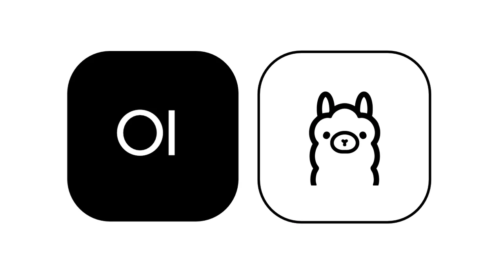
Open WebUI 提供多种安装方式，包括通过 Python pip 安装、Docker 安装、Docker Compose、Kustomize 和 Helm 等。
如果 Ollama 已安装在你的电脑上，使用以下命令：
docker run -d -p 3000:8080 --add-host=host.docker.internal:host-gateway -v open-webui:/app/backend/data --name open-webui --restart always ghcr.io/open-webui/open-webui:main
使用 Nvidia GPU 支持运行 Open WebUI：
docker run -d -p 3000:8080 --gpus all --add-host=host.docker.internal:host-gateway -v open-webui:/app/backend/data --name open-webui --restart always ghcr.io/open-webui/open-webui:cuda
此安装方法使用一个单一的容器镜像，将 Open WebUI 与 Ollama 捆绑在一起，可以通过一个命令轻松设置。
根据你的硬件配置选择合适的命令。
启用 GPU 支持：
docker run -d -p 3000:8080 --gpus=all -v ollama:/root/.ollama -v open-webui:/app/backend/data --name open-webui --restart always ghcr.io/open-webui/open-webui:ollama
仅使用 CPU：
docker run -d -p 3000:8080 -v ollama:/root/.ollama -v open-webui:/app/backend/data --name open-webui --restart always ghcr.io/open-webui/open-webui:ollama
这两个命令都能帮助你简化安装过程，让 Open WebUI 和 Ollama 无缝运行。
安装完成后，你可以通过访问 http://localhost:3000 使用 Open WebUI。
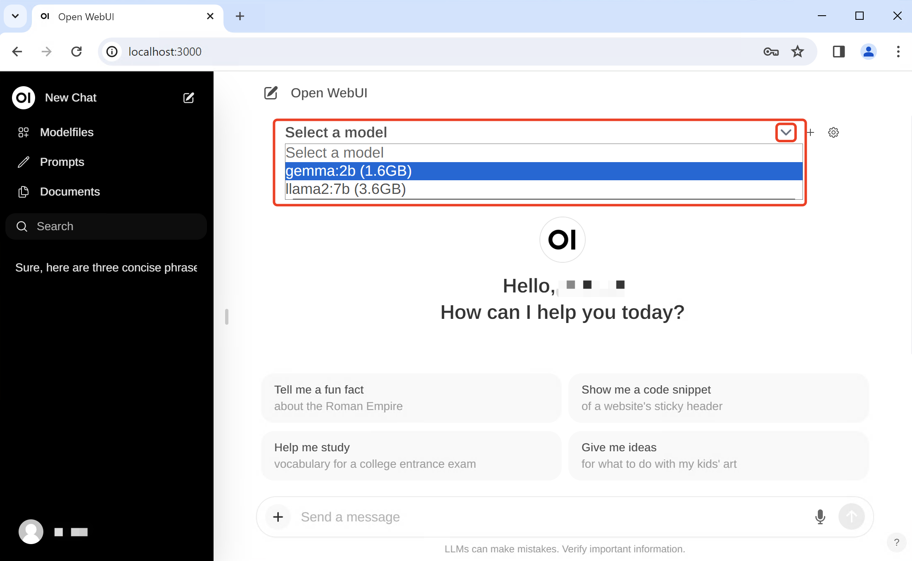
手动更新
使用 Watchtower 手动更新 Docker 容器：
docker run --rm -v /var/run/docker.sock:/var/run/docker.sock containrrr/watchtower --run-once open-webui
自动更新
每 5 分钟自动更新容器：
docker run -d --name watchtower --restart unless-stopped -v /var/run/docker.sock:/var/run/docker.sock containrrr/watchtower --interval 300 open-webui
注意：如果你的容器名不同，请将 open-webui 替换为你的容器名。
Open WebUI 的安装有两种主要方法：使用 uv runtime manager 或 Python 的 pip。
推荐使用 uv，因为它简化了环境管理，减少了潜在的冲突。
macOS/Linux：
curl -LsSf https://astral.sh/uv/install.sh | sh
Windows：
powershell -ExecutionPolicy ByPass -c "irm https://astral.sh/uv/install.ps1 | iex"
安装 UV 后，运行 Open WebUI 就比较简单了。
使用以下命令，确保设置 DATA_DIR 环境变量，以避免数据丢失。
macOS/Linux：
DATA_DIR=~/.open-webui uvx --python 3.11 open-webui@latest serve
Windows：
$env:DATA_DIR="C:\open-webui\data"; uvx --python 3.11 open-webui@latest serve
Open WebUI 可以通过 Python 的包安装程序 pip 进行安装，在开始安装之前，请确保您使用的是 Python 3.11，以避免可能出现的兼容性问题。
打开您的终端，运行以下命令以安装 Open WebUI：
pip install open-webui
安装完成后，您可以通过以下命令启动 Open WebUI：
open-webui serve
启动后，Open WebUI 服务器将运行在 http://localhost:8080，您可以通过浏览器访问该地址来使用 Open WebUI。
Page Assist 是一款开源的浏览器扩展程序，主要为本地 AI 模型提供直观的交互界面，让用户可以在任何网页上与本地 AI 模型进行对话和交互。
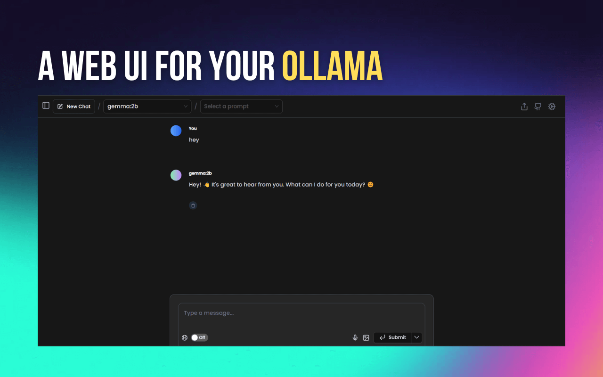
我们可以直接从 Chrome Web Store 或 Firefox Add-ons 商店下载安装，也可以通过手动安装的方式进行。
访问 https://chromewebstore.google.com/search/，搜索 Page Assist：
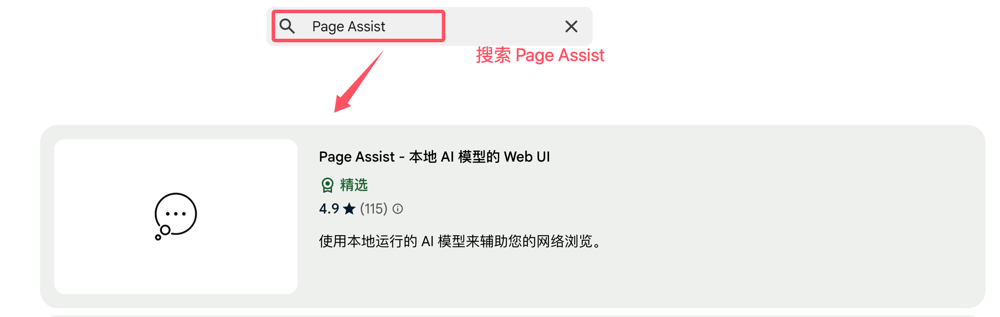
点击添加按钮：
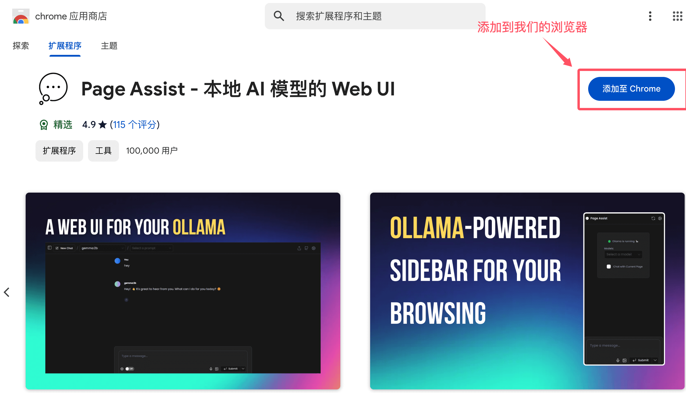
安装完成后，用户可以通过右上角的扩展小标志打开它：
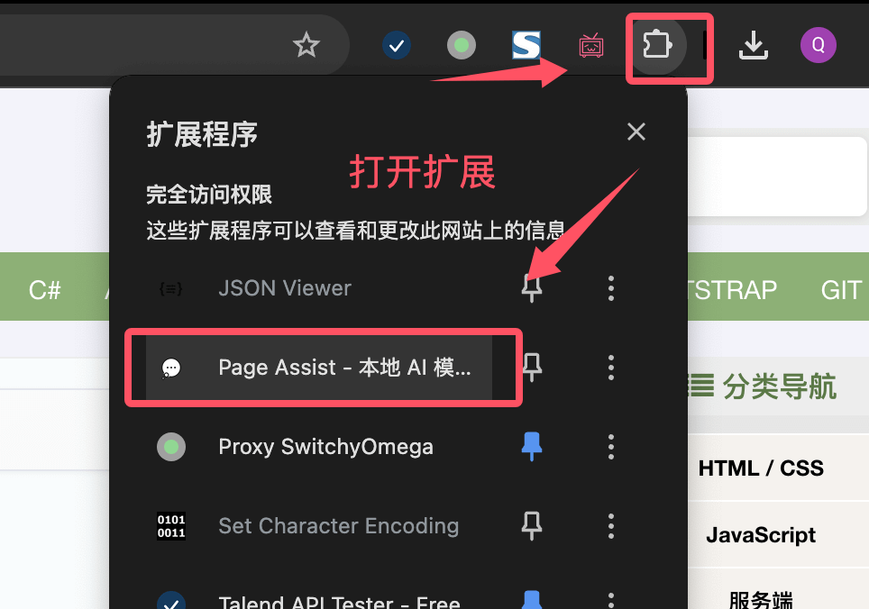
打开后就可以看到 Ollama 正在运行的提示，如果还没启动则需要启动 Ollama：
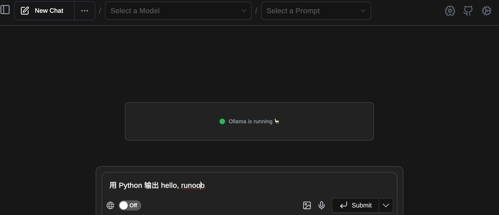
接下来我们可以选择指定的模型，然后输入提示词：
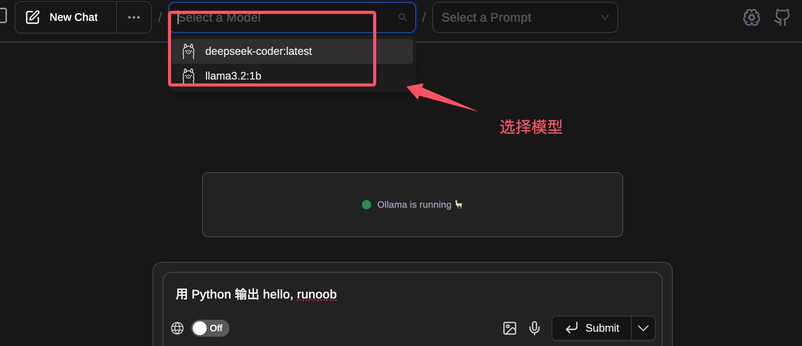
效果如下所示：
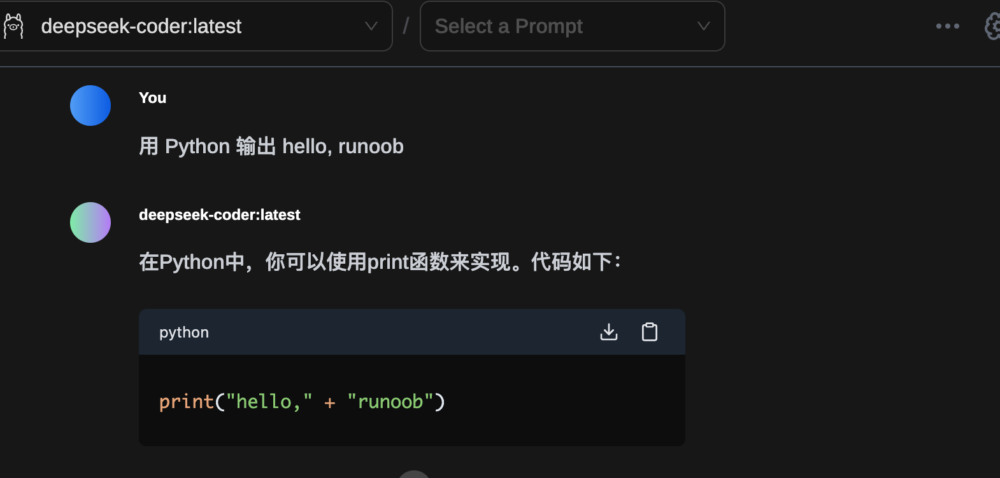
界面是英文看不懂，没事，点击右上角的齿轮，可以设置成中文：
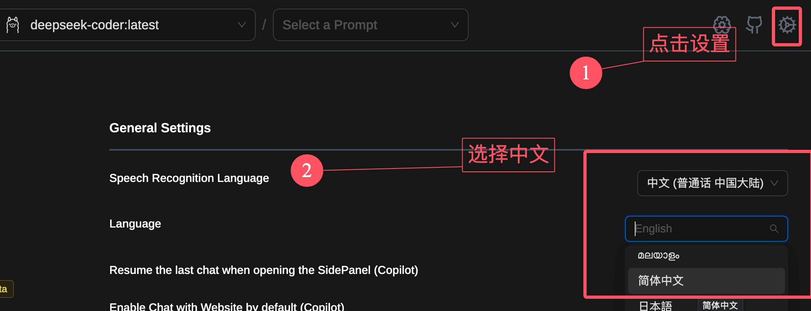
联网搜索功能，也可以修改默认搜索引擎：
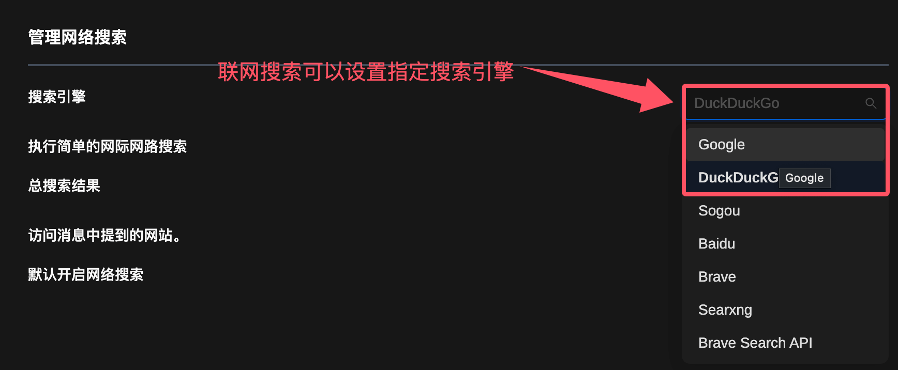
Page AssistGithub 源代码：https://github.com/n4ze3m/page-assist
本章节我们将讲解 Ollama 的模型管理命令：拉取、查看、复制、删除，以及模型在内存中的驻留机制。
pull 命令只下载模型不进入对话，适合提前把模型准备好。
下载默认标签（latest）:
ollama pull qwen3.5
下载指定规格标签:
ollama pull qwen3.5:4b
执行后会看到标准的下载流程输出：
$ ollama pull qwen3.5:4b pulling manifest pulling 87497c5f0e8f... 100% |████████████████████| 3.4GB verifying sha256 digest writing manifest success
下载中断不需要从头再来，Ollama 按层校验存储，重新执行同一命令会自动续传未完成的层。
另外要说明的是，ollama run 内置了 pull 逻辑：首次运行一个模型时，下载和加载会自动完成，所以日常使用中经常不需要单独 pull。
不同规格标签对应的是官方预先做好的不同模型文件，pull 时不能额外指定量化精度。想自己把大模型压成小体积，需要用 create 命令做量化，这属于 Modelfile 定制章节的内容。
list 列出本地所有模型及磁盘占用，是最常用的盘点命令。
列出本地模型:
ollama list
例如：
$ ollama list NAME ID SIZE MODIFIED qwen3.5:0.8b 9e3f4b3a1c2d 1.0GB 5 minutes ago qwen3.5:4b b1c7d9e2f3a4 3.4GB 2 days ago qwen3.5:latest a8b2c9d3e4f5 6.6GB 2 hours ago
四列分别是模型名、版本指纹、磁盘占用和最后修改时间，磁盘告急时按 SIZE 列排查最直接。
想深入看某个模型的细节，用 show 命令：
# 查看模型详情：能力、参数、系统提示词、许可证等 ollama show qwen3.5
show 能回答几个典型问题：这个模型支持哪些能力（对话、视觉、工具调用）、默认生成参数是什么、系统提示词写了什么、上下文窗口多大。
它还有一个进阶用法，把模型的完整配置导出成 Modelfile：
这个"查看配方 - 修改 - 重建"的玩法，会在 Modelfile 定制章节完整展开。
list 看的是磁盘，ps 看的是内存：谁被加载了、占了多少、什么时候卸载。
$ ollama ps NAME ID SIZE PROCESSOR CONTEXT UNTIL qwen3.5:9b a8b2c9d3e4f5 9.6GB 100% GPU 131072 4 minutes from now
各列含义如下：
| 列名 | 含义 |
|---|---|
| NAME / ID | 模型名与版本指纹，与 list 一致 |
| SIZE | 该模型当前占用的总内存（含内存与显存） |
| PROCESSOR | 加载位置：100% GPU 表示完全在显卡；100% CPU 表示完全在内存；出现 48%/52% CPU/GPU 这类比例说明显存不够、模型被切分 |
| CONTEXT | 当前分配的上下文窗口大小 |
| UNTIL | 距离自动卸载的剩余时间（keep-alive 倒计时） |
PROCESSOR 列是排查"模型为什么慢"的第一入口：只要不是 100% GPU，就说明模型没有完全吃进显存。性能优化的具体手段在 GPU 与性能章节详细讨论。
cp 给已有模型起一个新名字，常用于重命名或保留一份快照。
它有一个很实用的进阶技巧：给模型"借名"。
部分工具写死了模型名（比如 gpt-3.5-turbo），用 cp 把本地模型复制成这个名字，就能让这类工具直接用上本地模型：
cp 完成得几乎瞬时，因为它只是新建了一个模型名清单，指向原来那份模型文件，不会在磁盘上复制出第二份几个 GB 的数据。
rm 删除本地模型，是模型库"只进不出"问题的解药。
$ ollama rm qwen3.5:0.8b deleted 'qwen3.5:0.8b'
清理磁盘的推荐流程是：先用 ollama list 找出体积大且不再使用的模型，再逐个 rm。
如果有多个标签共享同一批底层文件，删除其中一个标签不会影响其他标签的正常使用。
用 cp 借过名的模型要一并记得处理：删除原模型后，借名副本依然存在并继续占用空间，别让它们变成看不见的磁盘黑洞。
先看一张模型的生命周期图，管理命令各自作用在哪一步就一目了然了。
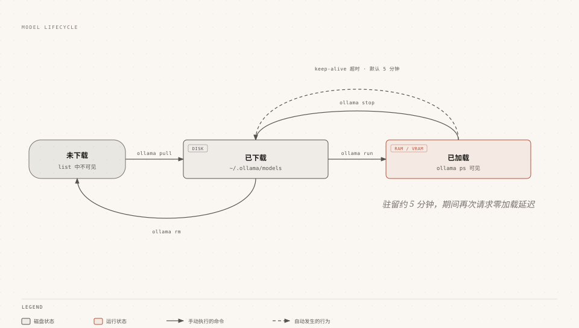
关键机制是 keep-alive：模型对话结束后并不立刻卸载，而是默认在内存或显存中驻留 5 分钟。
这 5 分钟内再次请求，响应不再有模型加载等待；超过时间没有新请求，自动卸载、释放内存。
想让模型立刻让出资源，用 stop 命令手动卸载：
驻留时长有三种调整方式：
| 方式 | 做法 | 适用场景 |
|---|---|---|
| 改全局默认 | 设置环境变量 OLLAMA_KEEP_ALIVE，如 30m、2h | 服务器希望统一驻留策略 |
| 按请求指定 | 调用 API 时传 keep_alive 参数，如 -1 表示常驻不卸载 | 应用层对不同模型区别对待 |
| 立即卸载 | ollama stop 模型名 | 临时释放显存给其他任务 |
本章节将深入对话式使用 Ollama 的细节：多种对话方式、控制模型"性格"的生成参数、上下文窗口、思考模式与多模态对话。
同一条 run 命令，用法不同，适用场景也不同。
直接运行进入对话，模型会记住本轮会话里的上下文，适合连续追问：
把问题作为参数直接跟上，得到回答后立即退出，适合一次性任务：
通过管道把文本喂给模型，方便和其他命令组合：
此外，对话中输入三个双引号可以包裹多行文本，回车换行不会被当作提交。
模型每次生成一个词（token）之前，内部都经历同一条流水线，生成参数就是在不同环节干预这条流水线。
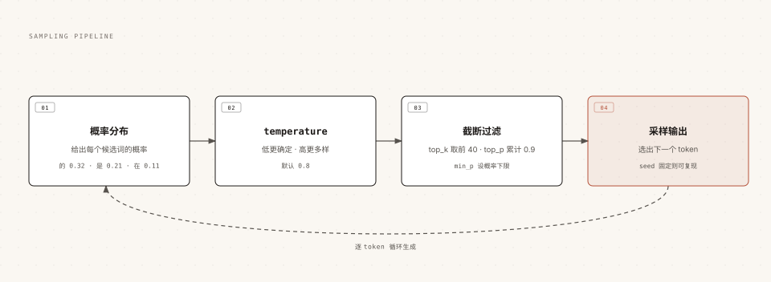
temperature 把概率分布调陡或调平，top_k / top_p / min_p 负责把低质量的候选砍掉，最后随机采样选出下一个 token。
常用参数汇总如下（默认值来自官方文档）：
| 参数 | 默认值 | 作用 | 典型用法 |
|---|---|---|---|
| temperature | 0.8 | 越高越有创造性，越低越严谨 | 写代码、抽取信息用 0~0.3；创意写作用 1.0 左右 |
| top_k | 40 | 只从概率前 k 个候选中采样 | 调小让输出更保守 |
| top_p | 0.9 | 只从累计概率达到 p 的候选中采样 | 与 top_k 二选一微调 |
| min_p | 0.0 | 按最高概率的比例设置候选下限 | 0.05 常用于替代 top_p |
| repeat_penalty | 1.0 | 惩罚重复内容 | 1.1 缓解车轱辘话 |
| seed | 0 | 固定随机种子，保证可复现 | 测试与调试时固定结果 |
| stop | 无 | 遇到指定字符串立即停止生成 | 截断多余寒暄或固定格式 |
| num_predict | -1 | 最大生成 token 数，-1 为不限制 | 限制长回答的输出长度 |
在交互模式中用内置命令随时调整：
想让参数永久生效，把它们写进 Modelfile 做成"预调优"模型，这是下一篇 Modelfile 的核心用法。
验证 seed 效果的小实验：固定 seed 后用同一个问题问两次，输出完全一致；放开 seed，每次回答都会不同。
上下文窗口决定模型一次能"看见"多少内容，包括系统提示词、对话历史和你的问题，单位是 token。
窗口装不下的内容会被截断，这就是模型"聊着聊着忘了开头"的根本原因。
Ollama 会根据显存自动选择默认上下文长度：显存小于 24GiB 默认 4K，24~48GiB 默认 32K，48GiB 以上默认 256K。云模型默认跑满最大上下文。
手动调整有三种入口：
加大窗口的代价是内存占用上升，用上一章的 ollama ps 看 CONTEXT 列即可确认当前值。
把 Ollama 接入 Agent、编码工具或联网搜索场景时，官方建议上下文至少设到 64K，否则工具返回的大量内容会挤占对话空间。
推理类模型（如 qwen3.5、deepseek-r1）支持先输出一段思考过程再给出答案，适合数学、逻辑类任务。
Ollama 默认开启思考，也提供了完整的控制开关：
交互模式里用 /set think 和 /set nothink 可以随时切换。
部分模型支持思考强度档位，例如 gpt-oss 只接受 low、medium、high 三档，用 --think=medium 这种形式指定。
关闭思考能明显降低响应时间，但推理类任务的正确率可能下降；编程助手等追求响应速度的场景经常选择 hidethinking——保留思考质量，又不让终端被过程刷屏。
qwen3.5 原生支持图像输入，命令行里把图片路径跟在问题后面即可：
API 和 SDK 的用法稍复杂（base64 编码），在视觉能力章节专门演示，还能结合结构化输出做"图片转结构化数据"。
让程序解析模型回答时，最怕它每次格式都不一样。Ollama 支持强制模型按 JSON Schema 输出。
返回的 content 就是严格符合 schema 的 JSON 字符串，可以直接反序列化成程序对象。
Python 中配合 Pydantic 定义 schema 再校验结果，是最顺手的组合，完整实践放在模型能力章节。
两个实用细节：结构化输出时把 temperature 降到 0 更稳定；只写 format 不在提示词里说明要求时，效果可能打折，最好在提示词里也描述一遍字段含义。
交互模式的每一轮对话，Ollama 都会把完整历史拼进上下文窗口发给模型，这带来两个必须知道的后果。
第一，会话内模型有记忆，退出（/bye）后记忆清零：重新 run 是一次全新会话，它不记得你上次说过什么。
第二，历史太长时最旧的内容先被挤出窗口，表现为模型突然"忘了"开头的约定。
对应的实用策略：
| 症状 | 原因 | 对策 |
|---|---|---|
| 重开对话后模型全忘了 | 会话上下文不跨进程保留 | 重要约定写进 Modelfile 的 SYSTEM，或用 API 自行管理消息历史 |
| 长对话后半段开始"失忆" | 上下文窗口被撑满，旧内容被截断 | 加大 num_ctx；或阶段性开新会话，只带关键结论 |
| 粘贴长文档后回答变慢变差 | 长内容挤占了上下文 | 只贴相关片段；整本文档交给 RAG 知识库方案 |
想绕开这些限制做持久记忆，就要用 API 自己维护 messages 数组，那是 API 章节的主角。
对话提示符下可直接使用的内置命令如下，随时输入 /? 可查看当前版本的实际列表。
| 命令 | 作用 |
|---|---|
| /? | 显示帮助与全部可用命令 |
| /set parameter <名> <值> | 调整生成参数，如 temperature、num_ctx |
| /set system "<提示词>" | 临时更换系统提示词 |
| /set think / /set nothink | 开启 / 关闭思考模式 |
| /clear | 清空当前会话上下文，重新开始 |
| /load <模型> | 不退出终端切换到另一个模型 |
| /save <名字> | 把当前会话（含系统提示词与参数）保存成一个新模型 |
| /show info / /show parameters | 查看当前模型信息 / 当前生效的参数 |
| /bye | 退出对话 |
/save 值得单独一提：把调好参数的对话直接固化成一个新模型，相当于不写 Modelfile 的快速定制，下一章会把它和 Modelfile 方案做对比。
本章节将横向梳理 Ollama 模型库的阅读方法、主流模型家族的定位、量化精度的权衡，最终给你一套按任务选型的实用方法。
模型选对了，一半的性能问题就不存在了。
Ollama 模型库（ollama.com/search）用标签体系标注每个模型的能力，选模型第一步就是按标签过滤。
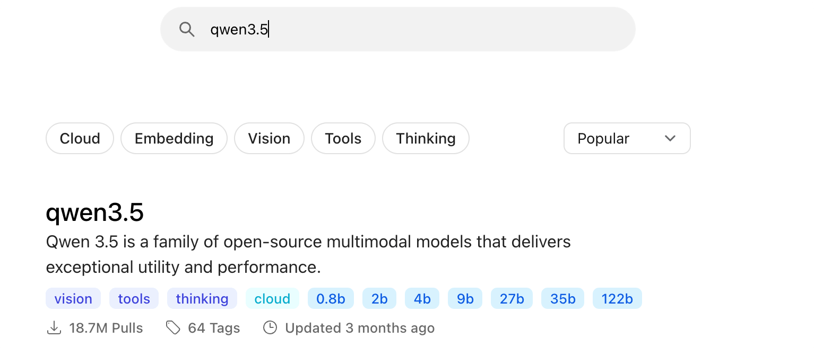
| 标签 | 含义 | 典型用途 |
|---|---|---|
| vision | 支持图像输入 | 看图问答、截图理解、文档识别 |
| tools | 支持工具调用 | Agent、函数调用、自动化 |
| thinking | 支持思考模式 | 数学、逻辑、复杂推理 |
| embedding | 文本转向量 | RAG、语义搜索、知识库 |
| cloud | 云端运行，无需本地算力 | 本地配置不足时调用大模型 |
以本教程的 qwen3.5 为例，它在模型库中同时带有 vision、tools、thinking 标签，属于"全能型"选手，这也是全书选它做测试模型的原因。
每个模型页还会列出全部标签（tag）、下载体积、上下文窗口、输入类型和更新时间，下载前花一分钟读完，能省下大量试错时间。
Ollama 不是模型，而是运行各家开源模型的平台。下面是当前最常见的几个家族：
| 家族 | 出品方 | 定位特点 | 适合场景 |
|---|---|---|---|
| Qwen（通义千问） | 阿里巴巴 | 规格齐全，中文能力强，多模态与工具调用完整 | 中文任务、通用开发、本教程示例 |
| DeepSeek | 深度求索 | 推理系列（R1）以思考链见长 | 数学、逻辑、需要深度推理的任务 |
| Gemma | 轻量规格表现出色，多模态 | 低配设备、轻量任务 | |
| Llama | Meta | 生态最广，社区资料多 | 通用任务、英文场景 |
| GPT-OSS | OpenAI | OpenAI 的开源系列，支持思考档位 | 通用任务、Agent 实验 |
| Mistral | Mistral AI | 欧洲阵营代表，小模型效率高 | 轻量部署、多语言 |
模型迭代速度以周计，具体可用的规格和能力以模型库实时页面为准。选型思路比具体结论更长寿：先定任务和能力标签，再看规格与硬件的匹配。
量化是把模型权重从高精度小数压缩成低位宽存储的技术，是"大模型跑进小显卡"的关键。
同一模型的不同量化版本，体积和质量关系大致如下：
| 精度 | 相对体积 | 质量表现 | 适用场景 |
|---|---|---|---|
| fp16 / fp32 | 基准（最大） | 无损 | 训练、量化前的原始权重 |
| q8_0 | 约 1/2 | 几乎无损 | 显存充裕时的优选 |
| q4_K_M | 约 1/4 | 小幅下降，性价比最高 | 绝大多数本地部署的选择 |
| q4_K_S | 略小于 q4_K_M | 比 q4_K_M 再低一点 | 极限压榨显存 |
模型库里的模型默认已经量化好（常见为 q4_K_M），下载即用，不需要自己操心。
想确认某个本地模型的实际精度，用 show 系列接口或 API 都能查到量化等级；想亲手把一个 fp16 模型压成小体积，用 create 命令的 quantize 参数即可，下一篇 Modelfile 章节有完整演示。
把"选模型"变成一道分类题：先确定任务，再对照推荐。
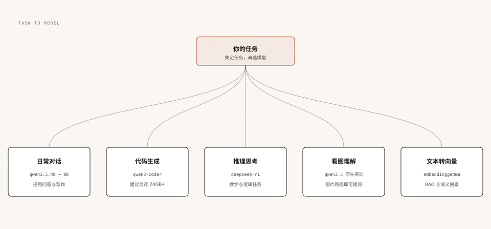
| 任务 | 推荐模型 | 硬件参考 | 备注 |
|---|---|---|---|
| 日常对话、写作 | qwen3.5:4b ~ 9b | 16GB 内存可跑 | 性价比首选，能力标签全 |
| 代码生成 | qwen3-coder | 建议 24GB 以上显存 | 配合编码工具需 64K 上下文 |
| 数学、逻辑推理 | deepseek-r1 / qwen3.5 思考模式 | 按规格常规配置 | 开启 think 后更稳但更慢 |
| 看图、截图理解 | qwen3.5（原生视觉） | 与对话规格一致 | 命令行直接传图片路径 |
| RAG、语义搜索 | embeddinggemma / qwen3-embedding | 体积小，要求低 | 嵌入模型不能用来聊天 |
嵌入（embedding）模型和生成模型是两类东西：前者只把文本变成向量，用于检索和相似度计算，不会输出文字回答。搭建知识库时两者都要有，别混用。
排除法比记忆法好用：先用一条粗略规则判断"跑不跑得动"，再微调。
粗略规则：模型下载体积约等于最低内存/显存需求，实际运行再预留 1~2GB 开销，上下文窗口越大追加越多。
| 你的可用内存 / 显存 | 能跑的规格上限 | 建议 |
|---|---|---|
| 8GB | qwen3.5:0.8b ~ 2b | 体验为主，接受能力上限 |
| 16GB | qwen3.5:4b ~ 9b | 日常使用甜点位 |
| 8GB 显存（独立显卡） | qwen3.5:9b | 保持 100% GPU 才有速度 |
| 24GB 显存 | qwen3.5:27b / qwen3-coder | 进阶开发与代码任务 |
| 48GB 显存以上 | 35b+ 与多卡组合 | 默认上下文也会自动加大 |
跑起来之后用 ollama ps 验证：PROCESSOR 列显示 100% GPU 说明全部进了显存；出现 CPU/GPU 混合比例，说明显存不够被切分，速度会明显下降，此时应换更小的规格而不是硬撑。
本地算力不够，又想用超大模型时，Ollama 提供了第三条路：cloud 标签的云端模型。
云模型的使用方式与本地模型完全一致：同样的命令、同样的 API、同样的工具集成，只是推理发生在 Ollama 的服务器上。
需要注意云模型有退役机制：官方会定期下线旧模型并给出推荐替代，通过邮件和官网公告通知，依赖某个云模型的自动化流程要留意这类通知。
本地模型完全不受退役机制影响，下载到磁盘上的权重永远可以用，这也是纯本地方案最让团队安心的特性。
流式输出、思考模式、结构化输出、视觉理解、向量嵌入、工具调用，加上联网搜索，构成 Ollama 模型能力的完整版图。
本章节用官方 Python 库逐个实战每一项能力，所有示例可直接运行。
首先，我们需要安装 Ollama 的 Python SDK。
可以使用 pip 安装：
pip install ollama
确保你的环境中已安装了 Python 3.x，并且网络环境能够访问 Ollama 本地服务。
在使用 Python SDK 之前，确保 Ollama 本地服务已经启动。
你可以使用命令行工具来启动它：
ollama serve
启动本地服务后，Python SDK 会与本地服务进行通信，执行模型推理等任务。
流式让回答逐字出现在界面上，是聊天应用体验的基础。
SDK 中把 stream 设为 True，然后迭代处理每个数据块：
关键点：流式的每个数据块只是"片段"，必须自己在客户端累积完整内容。后续要把这轮回答放进对话历史时，用的就是拼接后的完整文本。
推理模型会先输出一段思考过程再给答案，SDK 里通过 think 参数控制，思考和正文分属两个字段。
流式场景下，thinking 与 content 会在数据块中交替出现，用状态机方式切换渲染区域：
UI 实现建议：把 thinking 渲染成可折叠的灰色区域，content 渲染成正文；gpt-oss 系列只接受 low / medium / high 三档思考强度，传布尔值无效。
结构化输出让模型返回严格符合 JSON Schema 的数据，配合 Pydantic 校验，是程序消费模型输出的标准姿势。
这个模式是所有数据抽取类应用的基石：从简历抽字段、从工单提要素、从图片抽信息（配合视觉能力）都用它。
两个稳定性技巧：把 options 的 temperature 设为 0；提示词里同时描述一遍字段含义，与 schema 双重约束。
多模态模型（如 qwen3.5）可以接收图片，SDK 支持直接传文件路径，比 REST API 的 base64 编码省事得多。
视觉与结构化输出组合，可以做"图片转数据"：
embed 接口批量产出文本向量，配合余弦相似度即可实现最小可用语义搜索。
索引和查询必须使用同一个嵌入模型，否则向量空间不一致，检索结果没有意义。完整的知识库实战在 RAG 项目章节展开。
工具调用让模型学会"喊帮助"：它判断需要外部信息时返回 tool_calls，程序执行真正的函数，把结果回传后模型再总结作答。
先看完整的 Agent loop 时序，理解消息在四方之间的流动：
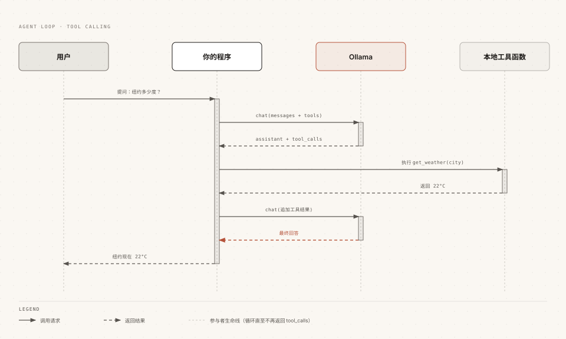
Python SDK 允许直接把函数当工具传入，函数签名和 docstring 会自动解析成 schema：
三个工程要点：其一，每次的 response.message 必须原样追加回 messages，工具结果用 tool 角色回传；其二，并行工具调用时模型可能一次返回多个 tool_calls，逐个执行逐个追加；其三，真实项目中工具结果可能很长，注意截断以保护上下文窗口。
Ollama 官方提供 web_search 和 web_fetch 两个联网接口，可以作为工具挂给模型，让它回答训练数据之外的新信息。
联网接口需要在 ollama.com 创建 API Key；搜索结果动辄数千 token，官方建议此类 Agent 场景把上下文开到 32K 以上。它也有现成的 MCP Server 实现，可以接入 Cline、Codex 等工具，集成细节见生态章节。
本篇系统梳理调用 Ollama 的四条代码路线：Python 官方库、JavaScript 官方库、原生 HTTP、以及 OpenAI / Anthropic 兼容 SDK，并用两个实战项目把它们串起来。
官方提供两个一手维护的库，接口设计保持一致，会一个就等于会两个。
两个库的核心方法对照：
| 方法 | 用途 | 关键参数 |
|---|---|---|
| chat | 多轮对话（主力方法） | model、messages、stream、tools、think、format、options |
| generate | 单轮文本生成 | model、prompt、stream、suffix |
| embed | 向量嵌入 | model、input（单条或数组） |
| list | 列出本地模型 | 无 |
| pull | 拉取模型（可监听进度） | model、stream |
Python 中一次带全参数的 chat 调用，覆盖前面几篇学过的大部分能力：
JavaScript 中的等价写法：
连接非默认地址（如远程服务器或 Ollama Cloud）时，用 host 与 headers 指定：
写脚本、调试接口、排查问题时，curl 是最快的工具。
| 场景 | 命令 |
|---|---|
| 单轮生成（非流式） | curl http://localhost:11434/api/generate -d '{"model":"qwen3.5","prompt":"你好","stream":false}' |
| 对话 | curl http://localhost:11434/api/chat -d '{"model":"qwen3.5","messages":[...],"stream":false}' |
| 向量嵌入 | curl http://localhost:11434/api/embed -d '{"model":"embeddinggemma","input":"文本"}' |
| 列出模型 | curl http://localhost:11434/api/tags |
| 模型详情 | curl http://localhost:11434/api/show -d '{"model":"qwen3.5"}' |
| 拉取模型 | curl http://localhost:11434/api/pull -d '{"model":"qwen3.5:4b"}' |
| 删除模型 | curl -X DELETE http://localhost:11434/api/delete -d '{"model":"qwen3.5:4b"}' |
已有项目迁移时，兼容层比重写省事得多。
JavaScript 项目里用 OpenAI SDK 接入本地模型：
Python 项目里用 Anthropic SDK 同理：
选择建议：新项目直接用官方 SDK（能力最全）；存量项目按现有 SDK 走兼容层（改动最小）；被某个只认 OpenAI 协议的框架集成时，兼容层是唯一通路。
用不到 40 行 Python，把前面学的 chat、流式、历史管理拼成一个可用的终端聊天工具。
$ python cli_chat.py 开始对话（模型 qwen3.5:4b），输入 exit 退出。 你：什么是 Python 的切片？ 助手：切片是用 [start:stop:step] 从序列中取子序列的语法， 例如 s[1:3] 取索引 1 到 2 的元素。 你：给个 RUNOOB 风格的例子 助手：s = "RUNOOB" print(s[1:4]) # 输出 UNO 你：exit
核心只有一处：每轮把 user 消息和 assistant 完整回答都 append 进 messages。模型本身无状态，"记忆"完全来自这个列表。
把同样的思路搬上浏览器，需要一个后端居中协调：管理会话历史、调用 Ollama、把流式结果转发给前端。
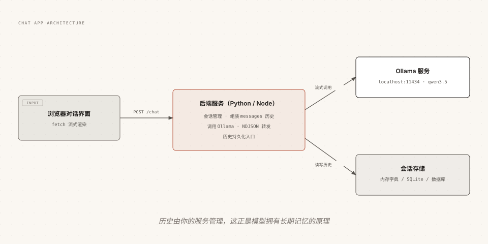
第二次请求中模型能顺着"切片"话题继续作答，说明服务端管理的会话历史生效了；换一个 session 参数则是一个全新会话，互不干扰。
这个几十行的骨架已经覆盖了类 ChatGPT 应用的三大要素：会话隔离（session 参数）、流式体验（NDJSON 转发）、记忆持久（历史写回）。加上数据库存储和多会话列表，就是完整实战项目的雏形，Web 应用实战章节会继续扩展它。
Ollama 官方维护着一整份集成目录：终端编程 Agent、主流 IDE、桌面助手和自动化平台都能直接使用本地模型。
本章节我们将用 ollama launch 一键接入，或手动配置环境变量，把本地模型塞进你的日常工具链。
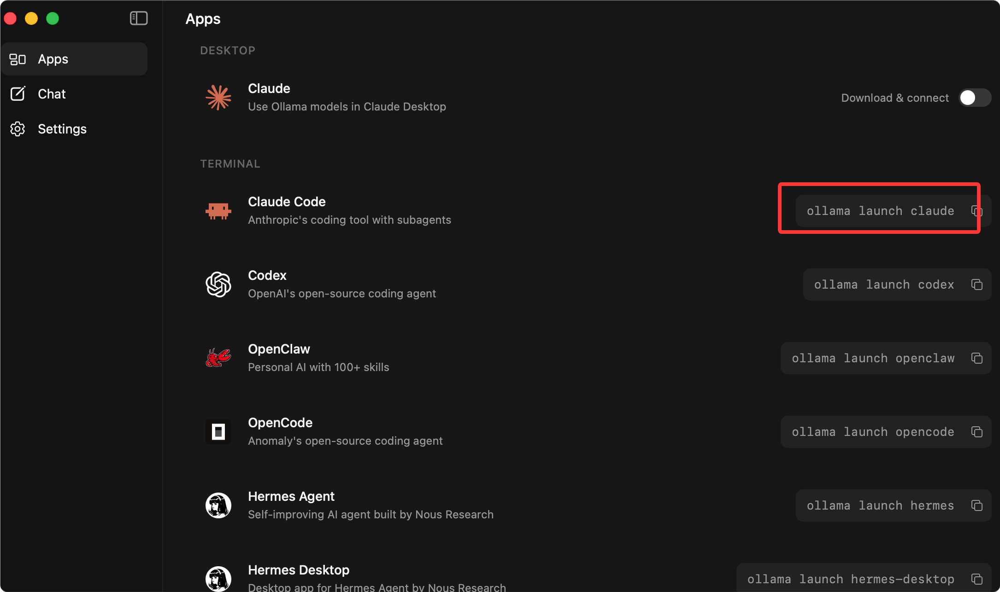
官方集成按使用场景分成三类，覆盖从写代码到日常助理的全部入口。
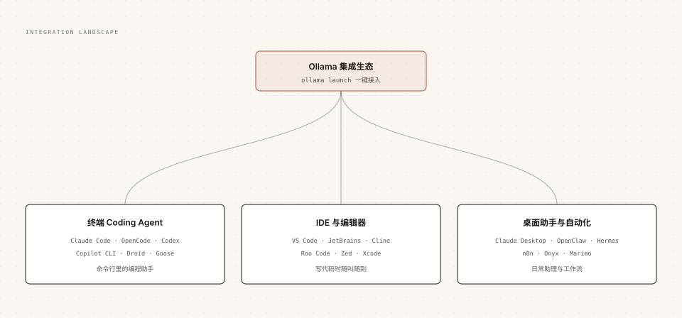
所有集成本质上都走同一条路：把工具的模型请求指向 localhost:11434，或指向与 OpenAI、Anthropic 兼容的接口。
launch 是集成的统一入口，交互式完成"选工具、选模型、写配置、启动"四步。
脚本与 CI 等非交互场景用 --yes 跳过所有选择器，模型必须配合 --model 指定：
终端里的编程 Agent 是当前最活跃的集成类别，Ollama 通过各家的兼容协议接入它们。
| 工具 | 说明 |
|---|---|
| Claude Code | Anthropic 的编程 Agent，经 Anthropic 兼容接口接入，支持工具调用、子任务、联网搜索 |
| OpenCode | 开源编程 Agent，编辑、运行、迭代代码 |
| Codex | OpenAI 的编程助手，含 CLI 与桌面形态 |
| Copilot CLI | GitHub 的命令行编程助手 |
| Droid | Factory 出品的 AI 编程 Agent |
| Goose | 开源自动化 Agent，支持 MCP 扩展 |
| DeepSeek Harness | DeepSeek 开源的 Agent 框架，带子任务与联网搜索 |
| Cline CLI | Cline 的命令行形态 |
以最有代表性的 Claude Code 为例，一键方式就是上面的 launch 命令；手动配置只需要两个环境变量：
接入后，Claude Code 的对话、文件编辑、命令执行、视觉输入、联网搜索都能使用本地或云端 Ollama 模型。
跑编程 Agent 的硬性门槛是上下文窗口：工具返回和代码文件动辄上万 token。官方建议把上下文设到 64K 以上，本篇最后一节给出设置方法。
Ollama 为 VS Code 提供了官方扩展，把本地模型接进 VS Code Chat。
三步完成接入：
第一步，在扩展市场安装 Ollama 扩展，它默认发现 localhost:11434 上的服务。
第二步，打开 Chat 面板，在输入框下方的模型选择器里找到 Ollama 分区，选择一个模型。
第三步，直接对话提问，本地模型即可参与编码答疑。
模型不出现在选择器里时，按顺序排查：确认 Ollama 在运行、确认 ollama list 能看到模型、执行命令面板里的 Ollama: Refresh Models，再用 Ollama: Diagnose Models 查看诊断输出。
| 工具 | 形态 | 说明 |
|---|---|---|
| JetBrains | 插件 | IntelliJ 系列 IDE 内使用 Ollama 模型 |
| Cline / Roo Code | VS Code 插件 | Agent 式编码插件，支持自定义模型端点 |
| Zed | 内置配置 | 高性能编辑器，原生支持自定义模型提供方 |
| Xcode | 内置配置 | Apple 平台开发工具接入本地模型 |
本地模型不只能写代码，还能充当日常助理与自动化引擎。
| 工具 | 定位 |
|---|---|
| Claude Desktop | Anthropic 桌面助手，可接入本地与云端 Ollama 模型 |
| OpenClaw | 接入消息软件的个人助理，处理日常事务 |
| Hermes / Hermes Desktop | 开源 Agent，带自我改进技能与记忆能力 |
| n8n | 可视化工作流平台，把 Ollama 嵌进自动化流程 |
| Onyx | 企业知识库问答平台（RAG 场景） |
| Marimo | 反应式 Python Notebook，可在单元格中调用模型 |
集成工具跑不动、答非所问，八成是上下文窗口太小。
工具返回的网页内容、整个代码文件的内容、多轮 Agent 历史，都会挤进上下文窗口，默认 4K 远远不够，官方对联网搜索、Agent、编码工具的建议值是至少 64000 token。
三种设置方式任选其一：
设置后用 ollama ps 的 CONTEXT 列验证是否生效，再观察 PROCESSOR 列确认显存还装得下。
除官方集成目录外，社区生态里还有一批与 Ollama 配合广泛的开源项目。
| 项目 | 定位 | 现状 |
|---|---|---|
| LangChain / LlamaIndex | LLM 应用开发框架，内置 Ollama 集成类 | 社区维护，RAG 开发常用 |
| Open WebUI | 自建类 ChatGPT 网页界面，一键连本地 Ollama | 社区维护，团队内部分享常用 |
| Continue | 开源 AI 代码助手插件 | 社区维护，支持自定义模型端点 |
Ollama 没有传统的配置文件，服务行为几乎全部由环境变量控制：监听地址、模型路径、上下文、并发、代理与调试。
本章节先讲三平台的设置方法，再按网络入口、请求调度、模型运行三个层面讲清每个核心变量。
先建立一张地图：十几个环境变量并不是平级的，它们分别作用在服务进程的不同环节。
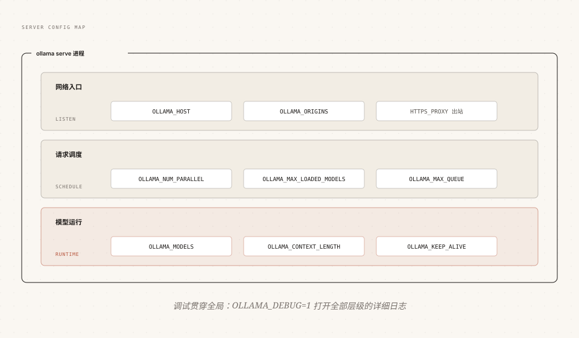
想查看当前版本支持的完整变量列表，执行 ollama serve --help 即可。
同一个变量，三个平台的设置入口完全不同，这是新手最容易卡住的地方。
Ollama 以应用方式运行时，环境变量要通过 launchctl 注入，设置完重启应用生效：
在开始菜单搜索"环境变量"，选择"编辑账户的环境变量"，新建或编辑变量后保存。
关键一步：先退出托盘里的 Ollama，保存后从开始菜单重新启动，新变量才会在新进程里生效。
另外还有一个 JSON 配置文件 server.json（位于 ~/.ollama/）用于少量开关型配置，例如关闭云端功能写入 {"disable_ollama_cloud": true}。绝大多数配置仍以环境变量为准。
默认只监听 127.0.0.1，仅本机可用；想让局域网其他设备调用，改为监听所有网卡：
开放到局域网等于把无鉴权的模型服务暴露给同网段所有设备，家庭网络尚可，公司网络务必配合防火墙规则或反向代理（私有化部署章节详谈）。
Ollama 默认只接受来自 127.0.0.1 和 0.0.0.0 的跨域请求，网页或浏览器扩展直连本地 API 时需要显式放行：
模型下载走 HTTPS 出站，网络受限环境用 HTTPS_PROXY 指向代理即可。
只设置 HTTPS_PROXY，不要设置 HTTP_PROXY：Ollama 拉取模型不走 HTTP，多设 HTTP 代理反而可能中断客户端与服务端的连接。Docker 场景在启动容器时传 -e HTTPS_PROXY=...；使用自签名证书的代理还需把 CA 证书装进系统（或打进镜像）。
默认模型存放在用户目录，三平台路径如下：
| 平台 | 默认模型路径 |
|---|---|
| macOS | ~/.ollama/models |
| Linux | /usr/share/ollama/.ollama/models |
| Windows | C:\Users\<用户名>\.ollama\models |
把 OLLAMA_MODELS 指向新目录即可整体迁移，已下载的模型文件移动过去后可以直接使用。
设置所有模型的默认上下文长度，未在模型或请求级单独指定时生效：
优先级从高到低为：API 请求 options.num_ctx、Modelfile 中的 PARAMETER num_ctx、该环境变量、按显存的自动分级默认值。
统一调整模型加载后的驻留时间，取值格式与 API 的 keep_alive 参数一致：
API 请求里单独传的 keep_alive 优先于这个全局值，可以做"全局 10 分钟、重点模型常驻"的分层策略。
Ollama 支持两级并发：多个模型同时驻留，以及单个模型并行处理多个请求，各有一个变量控制。
| 变量 | 默认值 | 作用 |
|---|---|---|
| OLLAMA_NUM_PARALLEL | 1 | 单个模型同时处理的请求数；所需内存按 该值 × 上下文长度 放大 |
| OLLAMA_MAX_LOADED_MODELS | 3 × GPU 数（CPU 推理为 3） | 允许同时加载的模型总数，前提是显存内存装得下 |
| OLLAMA_MAX_QUEUE | 512 | 服务繁忙时的最大排队请求数，超出直接返回 503 |
调度逻辑值得理解：显存足够时模型并行处理请求；显存不足时新请求排队，等待中的模型空闲卸载后腾出空间。
NUM_PARALLEL 是最容易踩坑的变量：设成 4 意味着上下文缓存要乘以 4 份，显存瞬间翻四倍，模型可能因此被挤出 GPU。多用户共享实例的规划方法在私有化部署章节展开。
排查问题的第一步永远是开调试、看日志。
Windows 图形应用开启调试的方式：先从托盘退出应用，然后在 PowerShell 中执行：
四套环境的日志位置汇总：
| 环境 | 日志位置 |
|---|---|
| macOS | ~/.ollama/logs/server.log |
| Linux（systemd） | journalctl -u ollama --no-pager --follow --pager-end |
| Windows | %LOCALAPPDATA%\Ollama\server.log |
| Docker | docker logs <容器名>（stdout/stderr） |
其余变量多与特定场景绑定，完整的分章节讲解在对应主题篇展开，这里先建立索引。
| 变量 | 示例值 | 作用 |
|---|---|---|
| OLLAMA_FLASH_ATTENTION | 1 / 0 | 强制开启 / 关闭 Flash Attention，长上下文时显著省显存（GPU 章节详解） |
| OLLAMA_KV_CACHE_TYPE | q8_0 / q4_0 | KV 缓存量化类型，需配合 Flash Attention（GPU 章节详解） |
| OLLAMA_VULKAN | 0 | 关闭 Vulkan 后端（Vulkan 异常时的开关） |
| OLLAMA_LLM_LIBRARY | cpu_avx2 | 强制指定推理库，绕过自动探测 |
| OLLAMA_TMPDIR | /data/tmp | 临时目录改位置（系统 /tmp 挂了 noexec 时） |
| OLLAMA_NO_CLOUD | 1 | 禁用云模型与联网搜索，纯本地模式 |
模型跑得慢，九成的原因能在一行 ollama ps 里找到线索。本章节从排查方法讲到硬件支持、多卡分配，再到 Flash Attention 与 KV 缓存量化两个进阶开关。
目标只有一个：让你的显卡物尽其用。
性能排查的第一动作是看 PROCESSOR 列，它直接告诉你模型 weights 装在了哪里。
$ ollama ps NAME ID SIZE PROCESSOR CONTEXT UNTIL qwen3.5:27b a8b2c9d3e4f5 20.4GB 52%/48% CPU/GPU 4 minutes from now
三种形态对应完全不同的处境：
| PROCESSOR 显示 | 含义 | 速度预期 |
|---|---|---|
| 100% GPU | 全部权重装入显存 | 显卡满血速度 |
| 100% CPU | 显存完全装不下，纯内存推理 | 慢一到两个数量级 |
| 52%/48% CPU/GPU | 显存不足，权重被切分 | 明显下降，卡在跨设备传输 |
配合生成速度一起看更直观：API 响应尾部的 eval_count / eval_duration * 10^9 就是 token/s（用法见 API 章节的后文），把这个数字作为每次优化的量化标尺。
遇到慢模型，按下面的决策路径走：
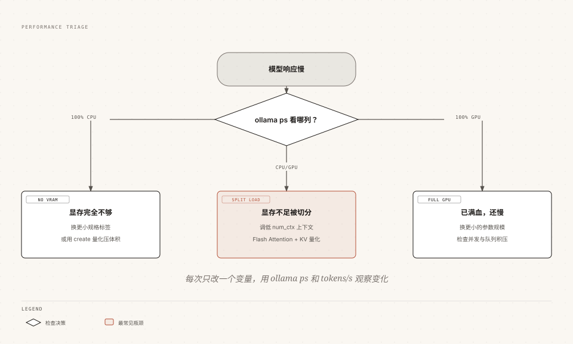
Ollama 支持四大加速后端，装对驱动是前提。
| 平台 | 后端 | 要求 |
|---|---|---|
| NVIDIA | CUDA | 计算能力 5.0 以上，驱动 550+（5.0~6.2 老卡需 570+） |
| AMD（Linux） | ROCm v7 | 需要 ROCm v7 驱动，老驱动会导致发现超时回退 CPU |
| AMD（Windows） | ROCm v7 / Vulkan | ROCm v7 或 HIP7 驱动栈；部分 RX 6000 系用 Vulkan 兜底 |
| Apple Silicon | Metal | 开箱即用，无需任何配置 |
| Intel / 其他 | Vulkan | 默认启用的补充后端，覆盖 AMD 老卡与 Intel 显卡 |
排查 GPU 是否被识别，看日志里的发现记录最有说服力；NVIDIA 用户也可以用 docker run --gpus all ubuntu nvidia-smi 验证容器场景的直通。
想限制 Ollama 只用某几块卡，或者强制纯 CPU，各后端有对应开关：
多卡机器的分配策略是自动的，规则只有一条：优先单卡，装不下才切分。
模型能完整装进任意一块卡时，Ollama 会选一块装下——单卡避免了跨 PCIe 的数据搬运，通常是吞吐最优解。
单卡装不下时，模型会被切分到所有可用卡上；此时还要给 KV 缓存和上下文留出余量，这也是大参数模型"明明总显存够却还是切分"的常见原因。
Linux 上多块 AMD 卡混用时，个别驱动版本可能出现乱码输出，这类问题在 AMD 官方的多卡已知问题文档中有记录，优先升级 ROCm 驱动。
没有独显也能跑，但有几个能榨则榨的点。
Ollama 自带多套 CPU 推理库，性能排序为 cpu_avx2 优于 cpu_avx 优于 cpu，默认自动选择；自动探测失灵时可以强制指定：
两个额外事实：macOS 的 Rosetta 转译环境只能使用基础 cpu 库；线程数由 options 中的 num_thread 控制，默认取物理核数，盲目调大反而会因为超线程竞争变慢。
CPU 推理的隐性大头是上下文长度：同样的模型，4K 上下文与 32K 上下文的 CPU 推理速度差异非常明显。给 CPU 场景配模型时，不要随手把 num_ctx 设很大。
这两项是长上下文场景最重要的显存优化，它们作用的对象不是模型权重，而是随上下文增长的 KV 缓存。
新版 Ollama 在后端支持时会自动启用 Flash Attention，也可以用变量强制开关：
| KV 缓存类型 | 显存占用 | 质量影响 | 建议 |
|---|---|---|---|
| f16（默认） | 基准 | 无损 | 显存充裕时保持默认 |
| q8_0 | 约一半 | 几乎无感 | 长上下文场景的推荐选择 |
| q4_0 | 约四分之一 | 长上下文下可感知 | 极限压榨时再考虑 |
两个注意点：KV 缓存类型是全局配置，对所有加载的模型生效；量化对质量的影响因模型而异，部分高 GQA 结构的模型敏感度更高，切换后建议用固定 seed 的提示词对比验证。
模型选型章节讲过量化的体积收益，这里补上速度视角的几个结论。
| 精度 | 体积 | 速度 | 质量 | 适用 |
|---|---|---|---|---|
| q8_0 | 约 fp16 的一半 | 与 fp16 接近 | 几乎无损 | 显存充裕的优选 |
| q4_K_M | 约 fp16 的四分之一 | 通常更快 | 小幅下降 | 本地部署默认档 |
| q4_K_S 及更低 | 更小 | 不一定更快 | 下降更明显 | 极限省显存 |
反直觉的一点：更低的量化不一定更快。推理速度受内存带宽制约，部分低比特格式需要额外的反量化计算，实测可能持平甚至更慢，选量化档位不要只看数字。
建议的对比方法：固定 seed 和同一组提示词，在 0.3 低温下对比两个量化档位的输出与 token/s，质量和速度一起看。
单请求优化到头之后，下一步是让服务吃得下并发。
核心变量是 OLLAMA_NUM_PARALLEL（单模型并行请求数），代价必须牢记：并行处理会把上下文缓存按倍数复制，所需显存约等于 该值 × 上下文长度 的 KV 空间，设大了模型可能被挤出 GPU。
服务端的排队由 OLLAMA_MAX_QUEUE 控制，默认 512，超过直接返回 503，客户端要做重试。
吞吐调优的操作顺序：
第一步，单请求调优（规格、量化、FA 与 KV 缓存）确认单路速度。
第二步，逐步调大 NUM_PARALLEL，每档都用 ollama ps 确认仍是 100% GPU，观察总吞吐是否上升。
第三步，出现排队 503 或混合切分时回退一档，那是显存的红线。
本地显存不够，又想用几百 B 参数的超大模型？Ollama Cloud 给了第三种选择：模型在云端 GPU 上跑，你的代码和工具链却感受不到任何变化。
本章节介绍 Cloud 模型的运行方式、直连 API、纯本地模式与退役机制，最后给出混合使用的选型策略。
Cloud 模型是 Ollama 的一种新模型形态：权重存放在 Ollama 的云端，推理在官方 GPU 集群完成，本地只负责转发请求。
它解决的痛点非常具体：几百 B 的旗舰开源模型动辄需要数百 GB 显存，个人和小团队根本无法本地部署，但用它的需求又是真实存在的。
可用的 Cloud 模型在模型库中带 cloud 标签，以 qwen3.5 家族为例，旗舰规格就是 qwen3.5:cloud。
先完成一次性准备：注册并登录 Ollama 账号，然后拉取 cloud 标签（它只是一个"指针"，不会下载权重）。
使用登录 Ollama 账号（云模型需要）:
ollama signin
在浏览器弹出的登录窗口输入邮箱即可（后面如果需要用手机验证，国内手机即可）：
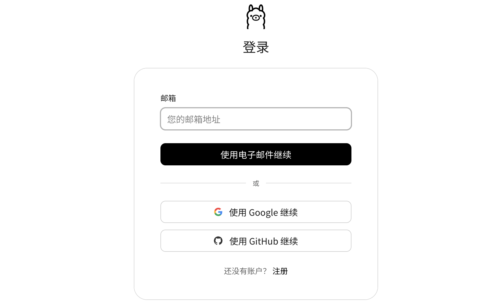
拉取 cloud 标签，几乎瞬间完成:
ollama pull qwen3.5:cloud
运行，与本地模型完全一致的体验:
ollama run qwen3.5:cloud
界面端可以看到有个云的图标：
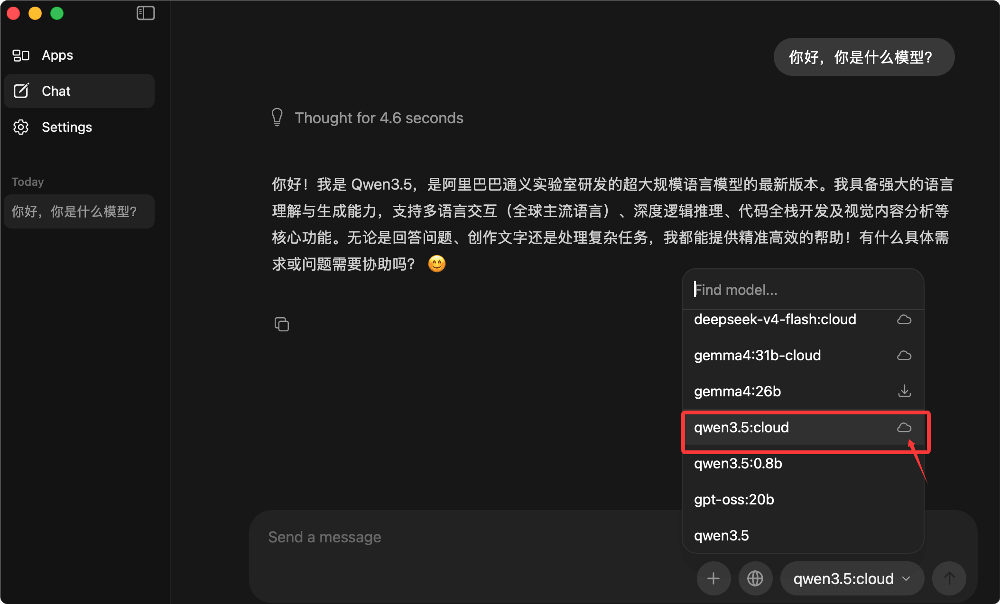
Cloud 优雅的地方在于转发逻辑完全由本地服务处理。
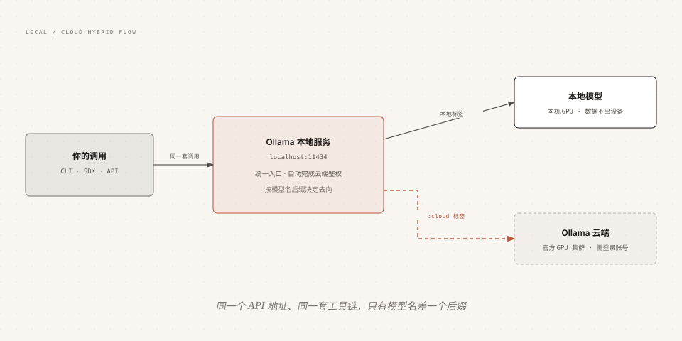
向 localhost:11434 请求一个 :cloud 模型时，本地服务会自动完成到云端的鉴权与转发，你的应用代码、Agent 工具、编辑器集成完全无感。
这意味着已有集成可以立刻享受大模型能力：把 Claude Code 的模型名换成 qwen3.5:cloud，同一个工具链就切换到了旗舰规格。
当前有一个已知的能力边界：Cloud 模型暂不支持结构化输出（format 参数），需要 JSON Schema 约束的任务仍应安排给本地模型，或在应用层自行解析。
除了经本地服务转发，也可以跳过本地直接调用云端 API，适合服务器没有安装 Ollama 的场景。
先在官网设置页创建 API Key，然后以 Bearer 方式携带：
官方 SDK 同样支持指定 host 与认证头，连接方式见编程接入章节的 Client(host=...) 示例，把 host 换成 https://ollama.com 即可。
API Key 目前不会过期，但可以随时在官网设置页吊销；它等同于你的云端用量凭证，不要提交进代码仓库。
对数据出域零容忍的团队，可以把 Ollama 的云端功能整体关闭，让它成为纯粹的本地软件。
两种关闭方式任选其一，改完重启 Ollama 生效：
关闭云功能会同时失去云模型与联网搜索能力，本地模型的全部功能不受任何影响。配合防火墙封锁出站，可以构建完全物理隔离的模型服务。
云模型有生命周期：随着更强的开源模型发布，官方会定期退役旧云模型，并通过邮件和官网公告提前通知，同时给出推荐替代。
官方公告的样式是一张"退役日期 - 模型 - 推荐替代"映射表，例如某云模型将在某日下线、迁移到哪个新版本，照着换模型名即可。
两条工程建议：
其一，自动化流程里引用云模型时，把模型名做成配置项而不是硬编码，退役切换时只改配置。
其二，关键业务准备好同能力的本地替代模型，云模型退役或网络异常时可立刻降级。
退役只针对云模型：下载到本地的模型权重永远可用，这也是本教程始终强调本地主线的原因。
| 场景 | 推荐方案 | 理由 |
|---|---|---|
| 显存装得下的日常任务 | 本地模型 | 零成本、零延迟、数据不出设备 |
| 隐私敏感数据 | 本地模型（或纯本地模式） | 合规可控 |
| 超大模型需求 / 无 GPU 设备 | Cloud 模型 | 无需硬件投入，工具链不变 |
| 新模型尝鲜 | Cloud 先试，确认价值再本地化 | 避免为试用购置硬件 |
| 长期自动化流程 | 本地为主 + 云备用 | 云有退役机制，本地无此风险 |
混合架构的最佳实践一句话：日常流量走本地，重任务按需 :cloud，模型名全部进配置文件。
一台带显卡的服务器，可以成为整个团队的共享模型服务：容器化编排、内网共享、反向代理、模型分发，本篇把这些拼成一套完整的团队部署方案。
核心认知先建立：Ollama 自身没有鉴权机制，安全边界要靠反向代理和网络策略来搭。
推荐的标准拓扑是三段式：成员流量先到反向代理，代理完成鉴权后转发给只听本机回环的 Ollama 服务。
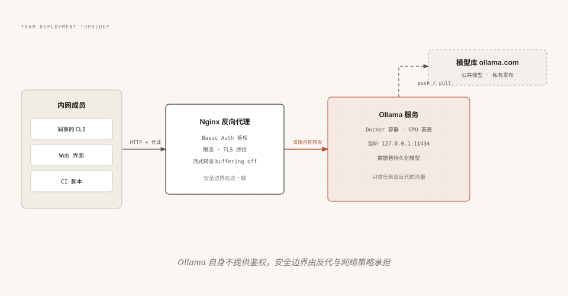
这个结构的关键设计是 Ollama 只监听 127.0.0.1，所有外部访问必须经过代理，鉴权入口因此唯一且可控。
服务器部署首选 Docker，团队场景用 Compose 固化配置：
# 文件路径：docker-compose.yml
services:
ollama:
image: ollama/ollama # AMD 显卡改用 ollama/ollama:rocm
container_name: ollama
restart: unless-stopped
volumes:
- ollama:/root/.ollama # 模型持久化，升级镜像不丢模型
ports:
- "127.0.0.1:11434:11434" # 只暴露给本机，交给 Nginx 对外
# NVIDIA GPU 直通（需要先装好 NVIDIA Container Toolkit）
deploy:
resources:
reservations:
devices:
- driver: nvidia
count: all
capabilities: [gpu]
volumes:
ollama:
docker 相关命令：
# 启动 / 查看日志 / 升级 docker compose up -d docker compose logs -f ollama docker compose pull && docker compose up -d
注意 ports 映射写的是 127.0.0.1:11434:11434 而不是 11434:11434：前者把端口限制在本机回环，外部只能经 Nginx 访问；后者等于把无鉴权服务直接暴露到网卡上，是最常见的团队安全事故来源。
小团队不想搭代理时，最低成本的共享方式是让 Ollama 直接监听内网：
# 服务器端：监听所有网卡 OLLAMA_HOST=0.0.0.0:11434 ollama serve
成员机器上把 OLLAMA_HOST 指向服务器，本地的 ollama 命令就会操作远程服务：
# 成员电脑：CLI 与 SDK 都认这个变量 export OLLAMA_HOST=http://192.168.1.100:11434 # 之后所有命令都作用在服务器上 ollama run qwen3.5
多人共享的容量规划直接引用配置章节的公式：并发请求数乘以上下文长度决定显存占用，10 人团队不建议把 NUM_PARALLEL 开到 10，排队往往比挤爆显存更体面。
# 文件路径：/etc/nginx/conf.d/ollama.conf
server {
listen 80;
server_name model.example.com; # 换成你的域名或内网 IP
location / {
proxy_pass http://localhost:11434;
proxy_set_header Host localhost:11434;
# Ollama 流式响应为 NDJSON，建议关闭缓冲避免"卡顿"
proxy_buffering off;
}
}
演示、远程联调场景可以用隧道把本地服务临时暴露到公网：
# ngrok ngrok http 11434 --host-header="localhost:11434" # Cloudflare Tunnel cloudflared tunnel --url http://localhost:11434 --http-host-header="localhost:11434"
隧道等于把无鉴权服务开到了公网，仅建议短期演示使用，用完即关；长期外部访问请走带鉴权的 Nginx 方案。
Ollama 没有内建账号体系，团队部署必须自建鉴权，常见三条路：
| 方案 | 做法 | 适用 |
|---|---|---|
| Nginx Basic Auth | htpasswd 生成密码文件，代理层统一校验 | 小团队，十分钟落地 |
| API 网关 | Kong、APISIX 等网关做 API Key 签发、限流与审计 | 多团队共享、需要计量 |
| 网络隔离 | Ollama 只进内网或 VPN 网段，不暴露公网 | 有企业网络管控的环境 |
以最常用的 Nginx Basic Auth 为例：
# 生成密码文件 sudo htpasswd -c /etc/nginx/.htpasswd zhangsan # Nginx location 块中追加两行： # auth_basic "Ollama API"; # auth_basic_user_file /etc/nginx/.htpasswd;
以上鉴权方案来自社区通行实践而非 Ollama 官方功能，选择时按团队现有基础设施走，原则只有一条：不要让 11434 直接暴露在不受信网络中。
团队定制的好模型需要一套分发机制，Ollama 的方案是命名空间加推送。
流程分四步：注册 ollama.com 账号；在官网设置页绑定本机公钥（~/.ollama/id_ed25519.pub）；把模型复制成带用户名的名字；推送。
# 复制成带命名空间的名字，用 tag 标版本 ollama cp runoob-helper myteam/runoob-helper:v1 # 推送到 ollama.com ollama push myteam/runoob-helper:v1 # 成员拉取使用（私有模型需登录授权账号） ollama run myteam/runoob-helper:v1
版本管理用 tag 表达：v1、v2 各自独立，回退就是改回旧 tag。
完全离线的内网替代方案也存在：把定制的 Modelfile 和权重文件放进内部代码库或文件服务，成员在本地 create 构建。Ollama 官方目前没有提供自建私有仓库的服务端，跨网分发以这两种形态为主。
自建服务的日常运维围绕三件事：服务活着、资源够用、错误可查。
官方提供的抓手是 ollama ps（模型加载与显存）、日志（位置见配置章节汇总表）和 API 的 usage 字段（token 级耗时统计）。
社区方案补齐了指标化监控：开源的 Ollama exporter 可以把请求数、token 吞吐等指标暴露给 Prometheus，用 Grafana 出大盘。需求简单时，一个定时轮询 /api/ps 与日志关键字告警的脚本也够用。
监控方案多为社区维护，选型前确认其支持的 Ollama 版本；本文不锁定具体项目名，以"指标暴露 - 时序库 - 看板"三件套的思路自建亦可。
已有 K8s 基础设施的团队，可以用 Deployment 把 Ollama 跑进集群，要点有三：模型数据用 PVC 持久化、GPU 节点用资源调度声明、服务暴露走集群内 Service。
# 骨架示意：Deployment + GPU 资源声明
apiVersion: apps/v1
kind: Deployment
metadata:
name: ollama
spec:
replicas: 1
template:
spec:
containers:
- name: ollama
image: ollama/ollama
ports:
- containerPort: 11434
volumeMounts:
- name: models # 模型持久化，避免 Pod 重建重新拉取
mountPath: /root/.ollama
resources:
limits:
nvidia.com/gpu: 1 # 声明 GPU，配合集群 GPU 调度
volumes:
- name: models
persistentVolumeClaim:
claimName: ollama-models
Ollama 官方没有发布 Helm Chart，集群部署多依赖社区 Chart 或自研清单；上 K8s 的收益主要在调度与自愈，如果只有一台 GPU 服务器，Docker Compose 通常是更省心的选择。
本地部署天然自带隐私优势，但数据不出设备不等于什么都不用管：暴露面、模型许可证、企业管控各有各的边界。
本章节把安全与合规问题收敛成一张暴露面地图、一份防护清单和一套许可证检查流程。
先说优势的来源：本地运行时，提示词与回答全程停留在你的设备上，不经过任何第三方服务器，这是架构层面的保证，不是厂商承诺。
官方对数据的表述可以概括为两条：本地运行时官方看不到你的提示词与数据；使用云模型时，官方会处理请求以提供服务，但声明不存储、不记录内容，也不会用于训练，仅收集提供服务所需的基本账户信息。
同时要认清三个边界：
其一，隐私保证只覆盖"传输与处理路径"，模型生成内容的质量与事实性并不因本地而更可靠。
其二，你接入的工具（编辑器插件、Agent 框架）可能有各自的数据通道，Ollama 本地不等于整条链路本地。
其三，对话历史由你自己的应用持久化，它的存储安全属于你的责任范围。
Ollama 默认只监听本机回环地址，这是安全的前提；绝大多数安全事故都从"把监听地址改成 0.0.0.0"开始。
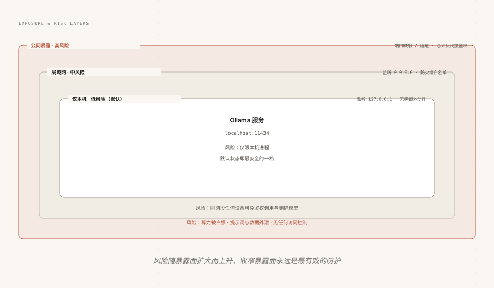
一个常被忽视的事实：暴露的不只是对话接口。模型管理接口同样对外开放，意味着同网段的任何人可以调用 /api/delete 删光你的模型、/api/pull 占满你的磁盘和带宽。
防护清单按优先级排列：
| 措施 | 说明 |
|---|---|
| 保持回环监听 | 没有明确的多人共享需求时，不改 OLLAMA_HOST |
| 必须共享时走反代 | Ollama 仍监听 127.0.0.1，由 Nginx 完成鉴权后再转发（私有化部署章节方案） |
| 收紧跨域 | OLLAMA_ORIGINS 按需放行，不要无差别放开全部来源 |
| 隧道即用即关 | ngrok、Cloudflare Tunnel 等公网隧道仅用于临时演示 |
| 升级保持习惯 | 关注官方版本更新，及时修复已知漏洞 |
一个实用的自查命令：在另一台设备上访问 http://你的IP:11434/api/version，能返回版本号就说明服务已暴露到网络，此时请回到上表逐条检查。
开源不等于无限制使用。模型库中的模型各自携带许可证条款，常见形态包括宽松的 Apache 2.0 类许可、附带附加条件的社区许可（如对用户规模、商用场景的限制）等。
合规检查的标准动作：
第一步，选型时看模型库页面与模型卡片中的许可说明。
第二步，本地用 ollama show 查看该模型附带的许可信息，确认与库页面一致。
第三步，商用部署前由法务确认条款适用性，尤其是用户规模限制与品牌标注要求。
查看模型信息（含许可字段与能力清单）：
ollama show qwen3.5
输出内容：
Model
architecture qwen35
parameters 9.7B
context length 262144
embedding length 4096
quantization Q4_K_M
requires 0.17.1
Capabilities
completion
vision
tools
thinking
Parameters
temperature 1
top_k 20
top_p 0.95
presence_penalty 1.5
License
Apache License
Version 2.0, January 2004
如果你基于别人模型再分发定制版本，许可义务会随之传递，在 Modelfile 的 LICENSE 指令中如实声明来源许可是基本功。
许可证条款以模型发布方的最新文本为准，教程中的分类仅为认知框架，不构成法律意见。
把 Ollama 引入企业环境，建议按网络、代理、应用三层构建管控，与私有化部署章节的拓扑衔接。
| 层级 | 措施 | 常见实现 |
|---|---|---|
| 网络层 | 限定可访问网段，默认拒绝跨段访问 | VLAN 隔离、VPN 准入、主机防火墙 |
| 代理层 | 统一入口、账号鉴权、限流与审计 | Nginx + SSO、API 网关签发 API Key |
| 应用层 | 按团队隔离实例与模型，控制额度 | 独立容器、OLLAMA_NUM_PARALLEL 配额规划 |
数据分级是另一个企业视角的必要动作：涉及核心机密的业务，强制使用部署在隔离网段的实例，并开启纯本地模式切断一切云端联动；一般业务才可以使用带 Cloud 混合能力的共享实例。
访问控制与审计方案属于企业通行实践而非 Ollama 官方功能，落地时应结合公司既有安全基础设施，原则是让所有模型调用都可归属到人、可追溯到时间。
本章节我们把前面学到的嵌入、检索、生成能力组合成一个真正可用的应用：把你的文档喂给本地模型，让它只根据你的资料回答问题，并注明出处。
完整代码不到 100 行，零外部向量库依赖，复制即可运行。
先明确问题：大模型不知道你硬盘里的资料，直接问只会得到编造的答案。RAG（检索增强生成）的思路是"开卷考试"——先从资料里检索相关片段，把片段塞进提示词，让模型照着作答。
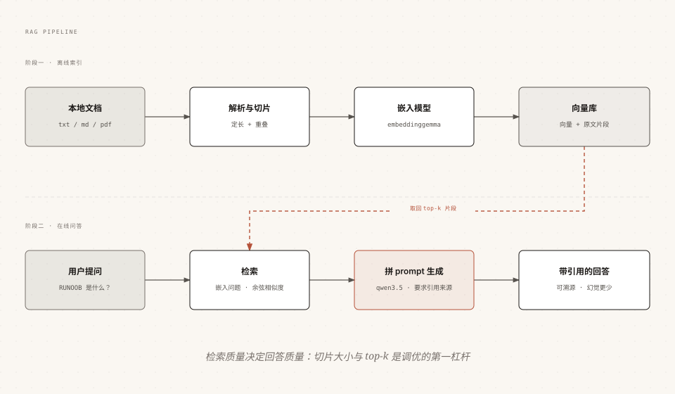
技术选型遵循"最小依赖"原则：
| 环节 | 选型 | 理由 |
|---|---|---|
| 嵌入模型 | embeddinggemma | 体积小、本地快；备选 qwen3-embedding |
| 生成模型 | qwen3.5:4b | 中文好、16GB 内存可跑 |
| 向量存储 | Python 列表 + 余弦相似度 | 零依赖，教学清晰；量大换 Chroma 等专业库 |
| 文档格式 | txt / md | 纯文本即可讲清原理，PDF 见文末扩展 |
需要拉取两个模型：
ollama pull embeddinggemma ollama pull qwen3.5:4b
EmbeddingGemma 是 Google 开源的轻量多语言文本嵌入（Embedding）模型，专门用于把文本转为向量，非常适合本地设备离线部署，Ollama 已经对该模型做适配封装，可以直接拉取使用。
模型上下文有限，整本文档塞不进去，需要切成小片段。切片策略用最朴素的"定长 + 重叠"：每片 300 字，相邻片段重叠 50 字，避免关键句被切断。
把所有片段和用户问题都转成向量，用余弦相似度找出与问题最相关的 top-k 片段。
embeddinggemma 输出的是 L2 归一化向量，此处仍保留完整余弦公式，让原理一目了然；换成点积结果相同。
把检索到的片段连同来源编号一起写进提示词，明确要求模型"仅依据资料回答"并标注引用。
准备资料并运行：
mkdir docs cp RUNOOB-python-notes.md docs/ python rag.py
输出：
$ python rag.py 正在索引 42 个片段... 索引完成。 问题（exit 退出）：Python 的切片是什么？ Python 切片是用 [start:stop:step] 从序列截取子序列的语法 [资料1]。 例如 s[1:4] 取索引 1 到 3 的字符 [资料2]。 参考来源： [资料1] RUNOOB-python-notes.md（相似度 0.712） [资料2] RUNOOB-python-notes.md（相似度 0.668）
注意回答末尾的来源标注：每句话都能追溯到你 docs 目录里的具体文件，这正是 RAG 相比"直接问模型"的核心价值。
RAG 效果不好，八成出在检索环节而不是生成环节。调优杠杆按影响力排序：
| 杠杆 | 默认值 | 调整方向 |
|---|---|---|
| 切片大小 size | 300 字 | 答得太碎就调大；太大则检索不准，经验区间 200~500 |
| 重叠 overlap | 50 字 | 句子频繁被切断时调大 |
| 检索条数 top_k | 3 | 资料密集时加大，但会占用更多上下文 |
| 相似度阈值 | 未启用 | 过滤相似度过低的片段，减少不相关干扰 |
| 生成温度 | 0.2 | 保持低温，知识库不需要创造性 |
高频问题速查：
| 现象 | 原因 | 对策 |
|---|---|---|
| 回答与资料无关 | 检索没命中 | 检查切片是否太小/太大，确认问题语言与资料一致 |
| 模型仍编造答案 | 提示词约束不足 | 强化"仅根据资料"表述，检索不到时直接回答"不知道" |
| 索引特别慢 | 片段过多逐条嵌入 | 使用批量 embed；文档量大时改用专业向量库与增量索引 |
| 长文档回答变差 | 关键信息被切碎 | 按标题/段落等语义边界切片代替纯定长 |
生产化路线图：文档量上万或需要 PDF 解析时，把"列表向量库"替换为 Chroma 一类专业向量库（提供持久化与高效近邻检索），用 pypdf 抽取 PDF 文本，其余代码骨架不变——这正是本篇把各环节解耦的意义。
本章节定制一个编码专用的本地模型 runoob-coder，并把它接进 VS Code 和 Claude Code，打造一套完全离线、不花 token 费用的编程助手。
核心工作是三件事：选对代码模型、写好编码 Modelfile、接进顺手的工具。
代码模型的能力差距比对话模型更明显，但门槛也更高，按显存对号入座：
| 你的硬件 | 推荐模型 | 预期表现 |
|---|---|---|
| 24GB 以上显存 | qwen3-coder | 专用代码模型，跨文件理解最强；30B 级参数对显存要求高，长上下文还需更多余量 |
| 16GB 内存无独显 | qwen3.5:9b 定制版 | 日常补全、解释代码、写单测足够 |
| 8GB 内存老机器 | qwen3.5:4b / 0.8b 定制版 | 轻量问答，复杂任务交给云端 |
显存不够跑 qwen3-coder 也不用遗憾：用 :cloud 标签直接调用云端版本，代码敏感的团队记得先过一遍合规。
按硬件选择拉取：
ollama pull qwen3-coder # 24GB+ 显存 ollama pull qwen3.5:9b # 16GB 内存
裸模型写代码能用但不"专业"——不注释、爱跑题、格式随意。用 Modelfile 把编码规范固化下来：
构建专属编码模型：
ollama create runoob-coder -f Modelfile
验收它是否"调教到位"，用三个标准任务测试：让一个函数直接可用（看完整性）、解释一段带坑的旧代码（看理解力）、要求写单测（看规范遵循）。三个都合格再接入编辑器。
num_ctx 65536 是给编辑器与 Agent 场景准备的：它们会把整个文件甚至多个文件塞进上下文。显存吃紧时降到 32768，并用 ollama ps 观察 PROCESSOR 是否仍为 100% GPU。
定制模型与裸模型在工具眼里没有区别，接入方式与第 11 篇完全一致。
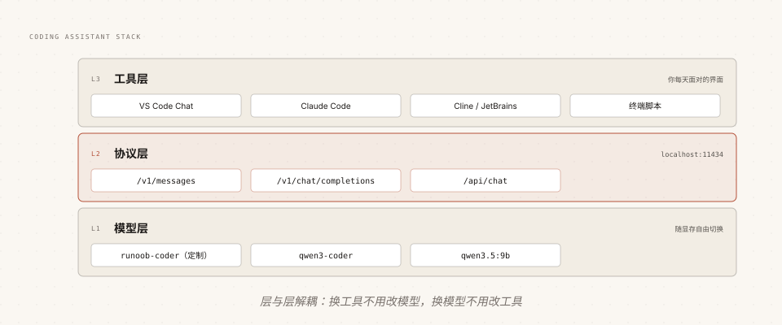
安装 Ollama 官方扩展后，在 Chat 的模型选择器里选中 runoob-coder 即可，无需其他配置。
接入后，Claude Code 的文件编辑、命令执行、多轮重构能力全部由本地模型驱动，跑长任务前记得确认上下文窗口已按上文设置。
不同任务该用不同量级的模型，把选择策略固化下来避免每次纠结：
| 任务类型 | 推荐模型 | 原因 |
|---|---|---|
| 函数补全、解释代码、写单测 | runoob-coder（本地） | 快、免费、隐私 |
| 跨文件重构、复杂调试 | qwen3-coder 或云端旗舰 | 需要更强的长上下文理解 |
| 批量生成、脚本化处理 | 本地小模型 + API | 零成本跑量 |
切换成本要足够低才可能真的切换：
一个实用的组合策略：日常 90% 的请求交给本地小模型，遇到真正的硬骨头再切大模型或云模型。Ollama 的多标签共存让这种"梯队"策略没有任何切换成本。
本章节我们将搭建类似 ChatGPT 应用：多会话切换、历史持久化到数据库、完整前端界面，以及三种部署方式。
一个可用的聊天产品至少需要四个能力：多会话隔离、历史持久化、流式回复、会话管理（新建与删除）。
支撑这些能力的数据库模型只需要两张表：
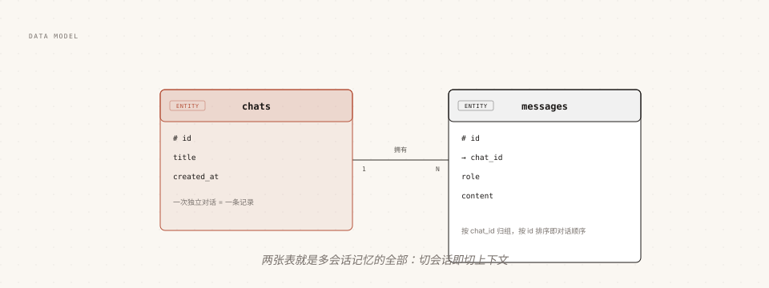
chats 存会话列表，messages 按外键归组存每条消息。切换会话时，把对应 messages 组装成 Ollama 的 messages 数组即可恢复完整上下文。
技术栈延续最小依赖原则：Flask + sqlite3（Python 标准库）+ 原生 JavaScript 前端，零前端框架。
安装 flask 和 ollama 扩展：
pip install flask ollama
载入模型：
ollama pull qwen3.5:4b
后端职责清晰：管理两张表，并把 /api/chat 的流式回复逐条写库。
对话接口做三件事：取历史拼上下文、流式生成、把完整回复写回数据库。
前端做到功能完整且足够简单：左侧会话列表，右侧消息区加输入框，fetch 流式渲染。
启动并访问：
python server.py
浏览器打开 http://localhost:5000 就可以看到生成的页面。
验证三个核心功能：切换左侧会话后历史完整恢复；新会话之间互不干扰；重启 server.py 后历史依然存在（已持久化到 chats.db）。
| 层级 | 做法 | 注意事项 |
|---|---|---|
| 本机自用 | python server.py 直接跑 | 默认监听 127.0.0.1，安全 |
| 内网共享 | app.run(host='0.0.0.0')，成员访问 http://服务器IP:5000 | 无鉴权，务必叠加 Nginx Basic Auth（见私有化部署章节） |
| 云服务器长期运行 | systemd 注册服务 + Nginx 反代 + 域名 | 先在服务器上 ollama pull 模型 |
云服务器上用 systemd 让应用常驻：
设置长期运行：
sudo systemctl daemon-reload sudo systemctl enable --now runoob-chat
对外部署的完整安全清单（回环端口、反代鉴权、暴露面自查）在安全与合规章节，上线前务必过一遍。
单个模型不必包打天下：让小模型做分流、专业模型做任务、联网模型查资料，用结构化输出当调度协议，就能组合出又快又省的智能应用。
本章节实现一个多模型路由系统，并把它升级成带联网能力的 Agent 工作流。
核心思路是分工：判断"用户想干什么"这件事很简单，用最小的模型即可；真正干活的任务再交给对口的专业模型。
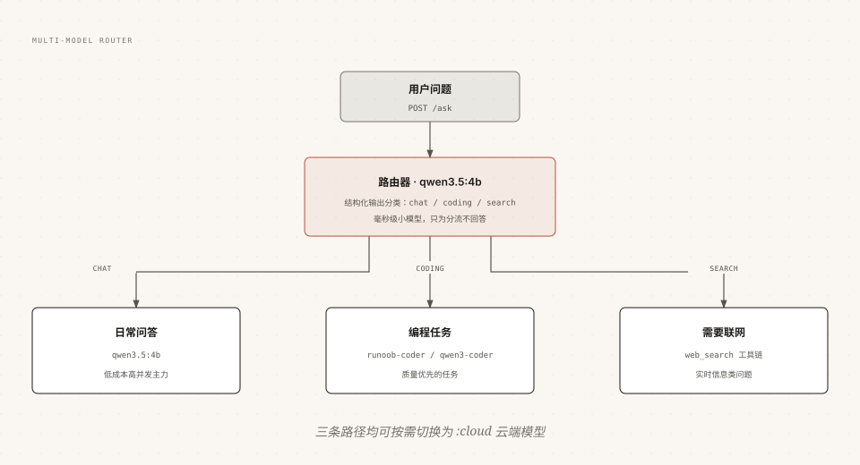
这样设计有三笔账：小模型路由只要几十毫秒，大模型不再处理低价值请求；各专家模型的参数可以按需独立调整；新任务类型只需加一个分支，不影响已有链路。
路由的关键是让分类结果"机器可读"，结构化输出在这里充当调度协议。
$ python router.py coding | 询问 Python 列表去重的编程方法 search | 询问当天的最新新闻，需要联网 chat | 闲聊类请求，直接回答即可
每条路径一个处理器函数，统一签名方便调度。
路由器自身不产生答案，所以它的幻觉风险被限制在"分错类"这一件事上；分错的代价也只是多走一次纠正，不会污染最终回答。
每条路径都可以加一个"云端升级档"：本地模型搞不定的任务，同一个代码结构换个模型名即可。
注意一个能力差异：Cloud 模型暂不支持结构化输出，所以路由器必须由本地模型承担，这也正好符合"小模型做路由"的设计。
多模型策略的账要从三个维度一起算：
| 维度 | 本地小模型 | 本地大模型 | 云端模型 |
|---|---|---|---|
| 首字延迟 | 最低（毫秒级加载） | 中等 | 含网络往返 |
| 边际成本 | 约等于电费 | 电费 + 显存占用 | 按用量计费 |
| 回答质量 | 简单任务够用 | 接近旗舰 | 旗舰级 |
| 并发能力 | 受本机限制 | 受显存限制 | 弹性最好 |
由此得到一条实用的基线策略：路由器和轻任务用本地小模型打底；质量敏感任务交给本地大模型；重负载或超规格任务切换云端；三类模型的模型名全部走配置文件，随退役公告或硬件变化随时调整。
本章节把排障知识收敛成一本随查随用的手册：从日志定位开始，按症状分流，覆盖显存不足、下载失败、端口冲突、GPU 异常、过载与升级兼容六大类问题。
Ollama 的报错提示往往很简短，真正的病因几乎都写在日志里。
| 环境 | 查看命令 / 位置 |
|---|---|
| macOS | cat ~/.ollama/logs/server.log |
| Linux（systemd） | journalctl -u ollama --no-pager --follow --pager-end |
| Windows | %LOCALAPPDATA%\Ollama\server.log |
| Docker | docker logs <容器名> |
| 手动 serve | 日志直接打印在当前终端 |
默认日志不含细节时，开启调试模式重启服务，能看到 GPU 发现、显存估算等关键过程：
# 调试模式启动 OLLAMA_DEBUG=1 ollama serve
遇到异常时，按下面的导航图先分流，再跳到对应小节：
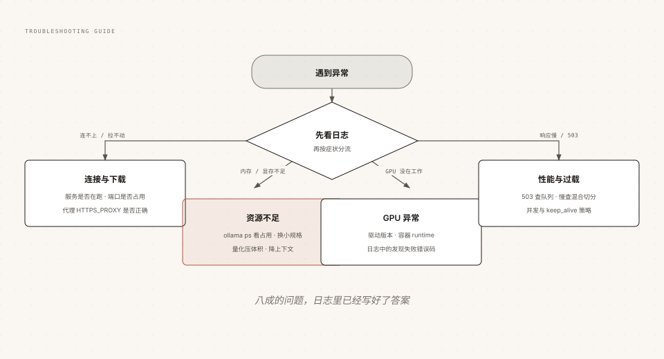
这是最常见的运行期问题，典型表现是生成到一半进程消失、系统卡死，或日志出现内存分配失败。
| 现象 | 原因 | 对策 |
|---|---|---|
| 加载大模型时进程被杀 | 物理内存不足 | 换更小规格标签；或用 create 量化压体积 |
| 生成中途崩溃 | 上下文累积导致 KV 缓存膨胀 | 调低 num_ctx；开启 Flash Attention 与 KV 缓存量化 |
| 多请求时集体失败 | NUM_PARALLEL 过大，显存被成倍占用 | 调回 1，逐步加回并观察 ollama ps |
| 模型能跑但被切分到 CPU | 显存略小于需求 | 清理后台显存占用；降一级参数规格 |
诊断命令三件套：ollama ps 看模型占用与切分比例，nvidia-smi（或 rocm-smi）看显卡实时显存，free -h 看系统内存。
下载问题几乎都出在网络路径上，好消息是 Ollama 支持按层断点续传，重试成本极低。
| 现象 | 原因 | 对策 |
|---|---|---|
| 下载反复中断 | 网络到源站不稳定 | 重跑同一命令续传；必要时配置 HTTPS_PROXY |
| 配置代理后依然失败 | 误设了 HTTP_PROXY | 只保留 HTTPS_PROXY，删除 HTTP_PROXY |
| 代理证书报错 | 自签名证书未被信任 | 把 CA 证书安装为系统证书 |
| 提示磁盘空间不足 | 目标分区容量不够 | 清理空间，或用 OLLAMA_MODELS 迁移存储路径 |
客户端报"连接被拒绝"，本质是 11434 端口上没有服务在应答。
| 现象 | 原因 | 对策 |
|---|---|---|
| 本机 curl 连接被拒 | Ollama 服务没有启动 | macOS / Windows 打开应用；Linux 执行 sudo systemctl start ollama |
| 日志报端口被占用 | 11434 被其他程序抢占 | 停掉占用进程，或换端口启动：OLLAMA_HOST=127.0.0.1:11435 |
| 远程机器连不上 | 服务只监听了回环地址 | 服务器端设置 OLLAMA_HOST=0.0.0.0 并放行防火墙 |
| Linux 手动安装后启动即退 | /tmp 挂载了 noexec，推理库无法加载 | 设置 OLLAMA_TMPDIR 指向可执行目录 |
症状是 ollama ps 显示 100% CPU，或日志出现 GPU 发现失败。NVIDIA 与 AMD 的排查路径不同。
先看驱动与直通环境，再按日志错误码对症处理：
| 检查项 | 方法 |
|---|---|
| 驱动版本 | nvidia-smi 能正常输出；升级到最新驱动 |
| 容器直通 | docker run --gpus all ubuntu nvidia-smi 不通则是 Container Toolkit 问题 |
| 驱动模块异常 | sudo rmmod nvidia_uvm && sudo modprobe nvidia_uvm 重载后重试 |
| 休眠恢复后失效 | Linux 睡眠唤醒后需重载 nvidia_uvm 模块 |
| Docker 运行久了掉 GPU | /etc/docker/daemon.json 加入 native.cgroupdriver=cgroupfs 后重启 Docker |
日志里的 CUDA 错误码有速记价值：3 表示未初始化、46 表示设备不可用、100 表示没有设备、999 表示未知错误，多数指向驱动或直通配置。
| 现象 | 原因 | 对策 |
|---|---|---|
| Linux 上完全检测不到 | 用户不在 video / render 组 | 把运行用户加入对应组后重启服务 |
| 日志出现发现超时（discovery timeout） | ROCm 驱动过旧（低于 v7） | 用 amdgpu-install 升级 ROCm v7 后重启 |
| 老卡不被支持 | 架构不在官方支持列表 | 尝试 HSA_OVERRIDE_GFX_VERSION 指定相近架构 |
| Windows 部分老卡无 ROCm | 驱动栈限制 | 使用默认 Vulkan 路径；异常时检查 GGML_VK_VISIBLE_DEVICES |
把前面章节的方法串成一条固定流程，六步之内定位绝大多数性能问题：
第一步，ollama ps 确认 PROCESSOR 是否 100% GPU，出现切分先回到显存优化。
第二步，看日志有没有排队、卸载、发现失败的记录。
第三步，收到 503 说明队列满了，检查并发请求量与 OLLAMA_MAX_QUEUE，评估是否扩容。
第四步，多用户共享场景核对 OLLAMA_NUM_PARALLEL 与显存的乘法关系。
第五步，核对 keep_alive 策略：频繁卸载重装会让首字延迟暴涨。
第六步，用 API 的 usage 字段计算 token/s，与历史基线对比量化每次调整的效果。
升级后行为异常时，三个动作解决大部分情况：
# 1. Linux 手动升级前先清理旧库，避免新旧混用 sudo rm -rf /usr/lib/ollama # 2. 回退到指定版本 curl -fsSL https://ollama.com/install.sh | OLLAMA_VERSION=0.5.7 sh # 3. AMD 显卡同步升级 ROCm v7 驱动后重启
Windows 终端出现乱码方块是旧终端字体问题，与模型无关，换用 Windows Terminal 即可。
如何安全地升级 Ollama、把模型库搬到新磁盘或新机器，以及自定义模型的备份与恢复。
做好这三件事，你的本地模型资产就真正属于自己，不惧任何硬件与版本变化。
升级本身很简单，难的是"不翻车"。推荐的三步升级策略：
第一步，看更新说明：Release Notes 里会标注新特性、修复与已知问题，尤其是模型支持与接口变化。
第二步，备份关键资产：导出在用的自定义模型配方（方法见下文），确认模型目录位置。
第三步，先测后推：生产服务器先在一台测试机升级验证，再全面铺开。
| 平台 | 升级方式 |
|---|---|
| macOS / Windows | 自动下载更新，菜单栏或托盘点"Restart to update" |
| Linux（脚本安装） | 重新执行官方安装脚本 |
| Linux（手动安装） | 先删除旧库目录，再解压新包 |
| Docker | pull 新镜像后重建容器，数据卷保留全部模型 |
遇到兼容问题需要回退，或想尝鲜预发布版，用版本号变量精确控制， 安装指定版本（版本号见 GitHub Releases）：
curl -fsSL https://ollama.com/install.sh | OLLAMA_VERSION=0.5.7 sh
预发布版本同样通过版本号安装。
Linux 手动升级前先删除旧库目录（sudo rm -rf /usr/lib/ollama），新旧推理库混用是"升级后行为怪异"的头号原因。
模型动辄几十 GB，迁移的本质只有一句话：搬走 models 目录，然后告诉 Ollama 新位置在哪。
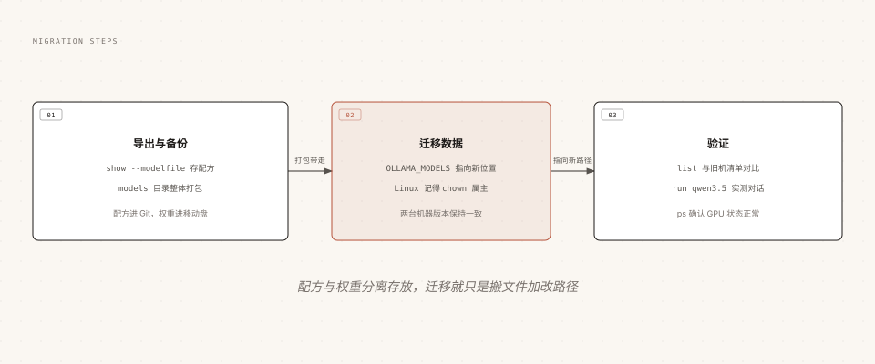
两个细节决定迁移成败：新机器的 Ollama 版本尽量与旧机一致；models 目录下的 blobs 与 manifests 结构必须原样保留，不要只拷贝单个模型文件。
自定义模型（Modelfile 构建的产物）有两种备份方式，建议都做。
注意一个细节：导出的配方中 FROM 行指向的是本机 blob 文件路径，换机器后无法直接使用。恢复时把 FROM 改回基座模型名（如 FROM qwen3.5:9b）再重建即可。
推荐的组织方式：所有 Modelfile 收进一个 Git 仓库管理，配合一个从零重建环境的脚本——硬件会换、系统会重装，配方在手，十分钟恢复全部定制模型。
本章节介绍 Ollama 相关执行命令，内容覆盖安装、模型管理、运行参数、Modelfile、REST API、环境变量与常见排障，均基于 Ollama 0.17.x 整理。
三平台各有标准安装方式，安装完成后 Ollama 会自动作为后台服务运行，监听 127.0.0.1:11434。
| 平台 | 安装方式 | 说明 |
|---|---|---|
| macOS | brew install ollama | 也可从官网下载 dmg 安装包 |
| Linux | curl -fsSL https://ollama.com/install.sh | sh | 官方一键脚本，自动配置 systemd 服务 |
| Windows | 官网下载安装包 | 按向导安装，自动注册为系统服务 |
| Docker | docker run -d -v ollama:/root/.ollama -p 11434:11434 ollama/ollama | 数据卷 ollama 持久化保存模型 |
绝大多数场景下不需要手动启动服务，但排障和临时改配置时会用到 ollama serve。
如果提示端口被占用，说明后台服务已在运行。此时另开一个终端执行 ollama serve 会报错，属正常现象，直接使用命令行或 API 即可。
模型管理是 Ollama 命令行的主体，共十个左右，全部列在下面这张表里。
| 命令 | 功能 | 示例 |
|---|---|---|
| ollama pull <model> | 从模型库下载模型，不写 tag 默认拉取 latest | ollama pull qwen3.5:4b |
| ollama run <model> | 交互式运行模型，本地没有会自动 pull | ollama run qwen3.5 |
| ollama list / ollama ls | 列出本地模型、大小与修改时间 | ollama list |
| ollama show <model> | 查看模型详情：参数、模板、系统提示等 | ollama show qwen3.5 |
| ollama ps | 查看已加载到内存的模型及剩余存活时间 | ollama ps |
| ollama stop <model> | 立即停止并卸载正在运行的模型 | ollama stop qwen3.5 |
| ollama cp <src> <dst> | 复制或重命名模型 | ollama cp qwen3.5 runoob-clone |
| ollama rm <model> | 删除本地模型，释放磁盘空间 | ollama rm qwen3.5:0.8b |
| ollama create <name> -f <file> | 基于 Modelfile 创建自定义模型 | ollama create runoob-coder -f Modelfile |
| ollama push <model> | 把模型推送到远程模型库，需先登录 | ollama push myteam/runoob-coder |
| ollama serve | 启动后台服务，一般随系统自动运行 | ollama serve |
日常使用频率最高的组合是 run、list、ps、rm 四个：跑模型、盘库存、看内存、清空间。
rm 删除的是该标签对应的模型文件，若有其他标签共用同一份底层权重（blobs），磁盘空间要等最后一个引用它的标签被删除后才会真正释放。
run 既能当一次性问答工具，也能进入多轮对话的交互模式，还支持运行时改参数。
参数写在模型名后面，只对本次运行生效，不会写入模型配置。
进入交互模式后，以斜杠开头的命令用来调整会话状态，这些调整只对当前会话生效。
| 命令 | 功能 |
|---|---|
| /set parameter <name> <value> | 临时调整推理参数，如 temperature |
| /set system <prompt> | 临时设置 system 提示词 |
| /show info | 显示当前模型信息 |
| /show modelfile | 显示当前模型对应的 Modelfile |
| /save <name> | 把当前会话的设置保存为新模型 |
| /load <name> | 加载已保存的模型或会话 |
| /clear | 清空当前对话上下文，重新开始 |
| /bye | 退出交互模式 |
斜杠命令调好的参数想长期保留，用 /save 存成新模型，背后就是帮你生成了一份 Modelfile。
退出交互模式的另一个快捷方式是按 Ctrl+D，效果与 /bye 相同。
Modelfile 用一套类 Dockerfile 的语法，把"基础模型 + 参数 + 系统提示"打包成一个新模型。
导入本地 GGUF 权重只需要把 FROM 指向文件路径，常用于运行开源社区下载的模型文件。
Modelfile 全部指令见下表，前三行是最常用的组合。
| 指令 | 作用 | 是否必填 |
|---|---|---|
| FROM | 指定基础模型或 GGUF 文件路径 | 必填 |
| PARAMETER | 设置推理参数：temperature、num_ctx、top_p、stop 等 | 可选 |
| SYSTEM | 设置系统提示词 | 可选 |
| TEMPLATE | 自定义对话提示模板 | 可选 |
| ADAPTER | 加载 LoRA 适配器 | 可选 |
| MESSAGE | 预置对话示例，实现 few-shot 引导 | 可选 |
| LICENSE | 声明模型许可证 | 可选 |
想基于现有模型改造又不想从零写，先执行 ollama show --modelfile 模型名 导出完整配方，改完再 create 即可。
Ollama 服务启动后默认监听 http://localhost:11434，所有 CLI 能做的事 API 都能做。
| 端点 | 方法 | 功能 |
|---|---|---|
| /api/generate | POST | 单轮文本生成，默认流式返回 |
| /api/chat | POST | 多轮对话，按 messages 数组传入历史 |
| /api/embed | POST | 生成文本向量嵌入，供 RAG 检索使用 |
| /api/tags | GET | 列出本地模型，对应 ollama list |
| /api/show | POST | 查看模型详情，对应 ollama show |
| /api/pull | POST | 拉取模型，对应 ollama pull |
| /api/delete | DELETE | 删除模型，对应 ollama rm |
Ollama 提供 OpenAI 兼容端点 /v1/chat/completions，现有 OpenAI 生态的代码把 base_url 指向本地就能直接用。
$ python3 openai_compat.py 你好！runoob（菜鸟教程）是一个面向初学者的编程学习网站，提供大量免费的基础技术教程。
环境变量是配置 Ollama 服务行为的主要方式，改完需要重启服务才生效。
| 变量 | 说明 | 默认值 |
|---|---|---|
| OLLAMA_HOST | 服务监听地址，0.0.0.0 表示允许局域网访问 | 127.0.0.1:11434 |
| OLLAMA_MODELS | 模型存储路径，换大盘时常用 | ~/.ollama/models |
| OLLAMA_NUM_GPU | 放进 GPU 的模型层数，999 表示全部 | 自动 |
| OLLAMA_NUM_PARALLEL | 同一模型并发的请求数 | 自动 |
| OLLAMA_MAX_LOADED_MODELS | 同时驻留内存的最大模型数 | 自动 |
| OLLAMA_FLASH_ATTENTION | 启用 Flash Attention，长上下文时建议开启 | 关闭 |
| OLLAMA_KEEP_ALIVE | 模型闲置多久后从内存卸载 | 5m |
| OLLAMA_DEBUG | 开启调试日志，输出更详细的运行信息 | 关闭 |
OLLAMA_KEEP_ALIVE 设为 0 表示每次请求后立即卸载模型，省内存但每次请求都要重新加载；想常驻就设为 -1。该值的写法随版本有差异，以 ollama serve --help 与官方文档为准。
遇到异常先对照下表定位，大部分问题属于"模型名不对、服务没起来、资源不够"三类。
| 问题 | 排查思路 |
|---|---|
| 显存 / 内存不足（OOM） | 换更小的模型规格或更低量化精度，如用 4b 代替 9b |
| 提示 model not found | 检查模型名与 tag 是否正确，标签用冒号分隔，如 qwen3.5:4b 而非 qwen3.5-4b |
| connection refused | 确认服务是否在运行，检查 11434 端口是否被占用 |
| 响应速度慢 | 用 ollama ps 查看 PROCESSOR 列，确认模型是否真的跑在 GPU 上；适当调小 num_ctx |
| 多版本模型混淆 | 不写 tag 时会按内部规则挑"最新"版本，建议始终显式指定完整标签 |
最后把最高频的命令压缩成一张表，复制即用。
| 命令 | 功能 |
|---|---|
| ollama pull <model> | 下载模型 |
| ollama run <model> | 运行模型 / 进入交互对话 |
| ollama list | 查看已下载的模型 |
| ollama show <model> | 查看模型详情 |
| ollama ps | 查看正在运行的模型 |
| ollama stop <model> | 停止并卸载模型 |
| ollama rm <model> | 删除模型 |
| ollama cp <old> <new> | 复制 / 重命名模型 |
| ollama create <name> -f Modelfile | 用 Modelfile 创建自定义模型 |
| ollama serve | 启动服务 |
Ollama 更新较快，个别参数与命令行为可能随版本调整，动手前以 ollama --help 及官方文档为准。